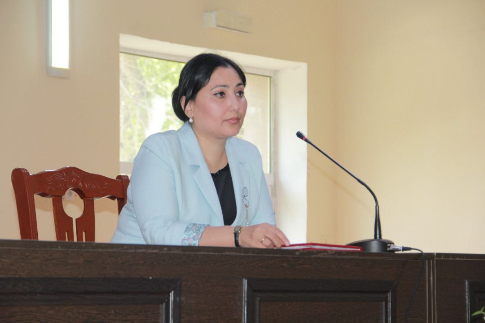

Саҳифаи сомонаҳо
Мудири шуъба

Муҳаммадиева Фирӯза Абдулвоҳидовна
Кормандони маориф
Абдуғафорова Шоира Абдуғаниевна
Қонуни Ҷумҳурии Тоҷикистон дар бораи Маориф
(Ахбори Маҷлиси Олии Ҷумҳурии Тоҷикистон соли 2004, №5, мод.345; соли 2005, №12, мод. 655; соли 2006,
№12, мод. 546, соли 2008, №6, мод. 465; соли 2009, №3, мод.81; № 5, мод.336; №7-8, мод. 500; Қонуни ҶТ
аз 25.03.11с. №709)
Маҷлиси намояндагон 14-уми апрели соли 2004 қабул кардааст Маҷлиси миллӣ 29-уми апрели соли 2004 ҷонибдорӣ намудааст Қонуни мазкур асосҳои ҳуқуқӣ, ташкилӣ, иҷтимоию иқтисодии инкишофи маорифро дар Ҷумҳурии Тоҷикистон муайян намуда, сохтори системаи маориф, принсипҳои танзим, идоракунӣ, ваколату самтҳои фаъолияти мақомоти онро муқаррар менамояд ва барои дигар санадҳои меъёрии ҳуқуқии Ҷумҳурии Тоҷикистон оид ба соҳаи маориф заминаи ҳуқуқӣ мебошад.
Маҷлиси намояндагон 14-уми апрели соли 2004 қабул кардааст Маҷлиси миллӣ 29-уми апрели соли 2004 ҷонибдорӣ намудааст Қонуни мазкур асосҳои ҳуқуқӣ, ташкилӣ, иҷтимоию иқтисодии инкишофи маорифро дар Ҷумҳурии Тоҷикистон муайян намуда, сохтори системаи маориф, принсипҳои танзим, идоракунӣ, ваколату самтҳои фаъолияти мақомоти онро муқаррар менамояд ва барои дигар санадҳои меъёрии ҳуқуқии Ҷумҳурии Тоҷикистон оид ба соҳаи маориф заминаи ҳуқуқӣ мебошад.
Муфассал...
БОБИ 1. Қоидаҳои умумӣ
Моддаи 1. Мафҳумҳои асосӣ Дар Қонуни мазкур мафҳумҳои зерин истифода мешаванд: маориф – раванди бомароми таълиму тарбия ба манфиати шахс, ҷамъият ва давлат, ки дар он соҳиби меъёри муайяни таҳсилот гардидани шаҳрвандро давлат муқаррар кардааст; соҳиби таҳсилот – ба меъёри муайяни таҳсилот соҳиб шудани шаҳрванд мебошад, ки бо ҳуҷҷати дахлдор тасдиқ карда мешавад; системаи маориф – маҷмӯи барномаҳои таълимӣ ва стандартҳои давлатии таҳсилот, шабакаи муассисаҳои таълимии амалкунанда, сарфи назар аз шакли ташкилию ҳуқуқӣ ва моликият, мақомоти идораи маориф, муассисаю ташкилотҳои он, хонандагон ва тарбиягирандагон, омӯзгорон ва дигар кормандон, иттиҳодияҳои муассисаҳои таълимӣ, воҳидҳои зерсохторӣ ва дигар унсуре мебошанд, ки барои ҳалли мақсаду вазифаҳои ягона муттаҳид гардида, ба татбиқи сиёсати давлат дар соҳаи маориф ва зиёд кардани саҳми соҳаи мазкур дар инкишофи иҷтимоию иқтисодии мамлакат, баланд бардоштани дараҷаи некӯаҳволии халқ равона карда мешаванд; муассисаи таълимӣ - шахси ҳуқуқие, ки раванди таълимро ба роҳ мемонад, яъне як ё якчанд барномаҳои таълимро амалӣ мегардонад ва (ё) тарбияи хонандагон, тарбиягирандагонро таъмин мекунад; муассисаи таълимии махсус – муассисае мебошад, ки дорои шароити алоҳидаи таълиму тарбия, муҳити махсуси омӯзгорӣ буда, офияти (реабилитатсияи) тиббию иҷтимоӣ, таҳсилу касбомӯзии кӯдакону наврасонеро, ки ба табобати тӯлонӣ эҳтиёҷ доранд, гирифтори иллати ҷисмонӣ, рӯҳӣ мебошанд ё рафтори онҳо барои ҷамъият хавфнок ҳисобида мешавад, таъмин менамояд; таҳсилоти муттасил – имконоти таҳсил ва баланд бардоштани ихтисос дар давоми тамоми ҳаёти инсон; - таҳсилоти фосилавӣ – тарзи амалигардонии ҷараёни таълим бо истифодаи технологияи муосири иттилоотӣ ва телекоммуникатсионӣ, ки таълимро дар масофа бе мулоқоти шахсӣ ва бевоситаи муаллим бо хонанда имконпазир мегардонад; (ҚҶТ аз 19.05.09, №529) машғулияти инфиродӣ – машғулияти омӯзгор бо хонанда ё донишҷӯ бо истифодаи усулҳои фаъоли таълим; саводнокӣ – маҳорати кор кардан бо маълумот, аз ҷумла маҳорати иҷрои амалҳои зарурии риёзӣ, дарки иттилооти маводи чопӣ, адабиёти илмӣ, инчунин маҳорату малакаи навиштан барои дониш омӯхтан аз матни шифоҳию хаттӣ; омӯзгори инфиродӣ – омӯзгоре, ки ба хонандагон ва ё донишҷӯён ба таври инфиродӣ, берун аз вақти корӣ дар мактаб ва ё донишгоҳ таълим медиҳад; натиҷаи таълим – дониш, маҳорат, малака, ақида, ҷаҳонбинӣ ва арзишҳои маънавие, ки хонанда дар давоми таҳсил дар муассисаи таълимӣ ҳосил кардааст; шакли таҳсил – тартиби ташкили таълим буда, таҳсили рӯзона, шабона, ғоибона, оилавӣ, фосилавӣ ва экстернатро дар бар мегирад; таҳсилоти иловагӣ – ҷалб намудани шаҳрвандон ба омӯзиши илми муосир, техника ва технологияи нав, эҷодкорӣ, дарёфти ихтисоси нав, бозомӯзӣ, такмили ихтисос ва ғайра, ки онро шахс ҳангоми таҳсил дар мактаб, пас аз хатми мактаб ва баъди дарёфти диплом низ метавонад касб намояд; - аккредитатсияи давлатӣ – тартиби муайян намудани мақоми муассисаи таълимӣ ҷиҳати пешбурди фаъолияти таълимӣ мутобиқи стандартҳои давлатии таълим; (ҚҶТ аз 19.05.09, №529) аттестатсия – тартиби муқаррар намудани мутобиқати мазмун, дараҷа ва сифати тайёрии хатмкунандагони муассисаҳои таълимӣ ба талаботи стандартҳои давлатии таҳсилот; - экстернат – омўзиши мустақилонаи фанҳои таълимӣ мутобиқи барномаи асосии таълимӣ бо аттестатсияи минбаъдаи ниҳоӣ дар муассисаи таълимӣ; (ҚҶТ аз 19.05.09, №529) нострификатсия – муайян кардани баробарарзишии (эквивалентии) ҳуҷҷатҳои шаҳрвандоне, ки дар давлатҳои хориҷӣ ва ташкилотҳои байналмилалӣ таҳсил кардаанд; корманди соҳаи омӯзгорӣ – шахсе, ки ба тарбияю таълими хонандагон дар асоси касбӣ машғул аст, аз ҷумла шахси соҳаи хизматрасонӣ, ки ба раванди таълим бевосита ворид мешавад; ординатор – табибе, ки курси такмили ихтисосро таҳти роҳбарии профессор дар аспирантураи тиббӣ (ординатура) мегузарад; интернатура – шакли баъди дипломии таҷрибаомӯзӣ ва такмили ихтисоси табибон дар муассисаи табобатӣ. Моддаи 2. Қонунгузории Ҷумҳурии Тоҷикистон дар бораи маориф Қонунгузории Ҷумҳурии Тоҷикистон дар бораи маориф ба Конститутсияи (Сарқонуни) Ҷумҳурии Тоҷикистон асос ёфта, аз Қонуни мазкур, дигар санадҳои меъёрии ҳуқуқии Ҷумҳурии Тоҷикистон ва санадҳои ҳуқуқии байналмилалие, ки Ҷумҳурии Тоҷикистон эътироф намудааст, иборат аст. Моддаи 3. Сиёсати давлатӣ дар соҳаи маориф Ҷумҳурии Тоҷикистон маорифро яке аз соҳаҳои бартариятнок эълон менамояд. Давлат барои амалӣ гардидани сиёсати таҳсилот системаи маорифи Ҷумҳурии Тоҷикистонро ташкил дода, фаъолияти онро барои таъмини ҳуқуқи таҳсили шаҳрвандон равона мекунад. Асоси ташкилии сиёсати давлат дар соҳаи маориф барномаи рушди маориф мебошад, ки аз ҷониби Ҳукумати Ҷумҳурии Тоҷикистон бо назардошти дастовардҳои ҷаҳонӣ таҳия гардида, ҷиҳати баррасӣ ва тасдиқ ба Маҷлиси намояндагони Маҷлиси Олии Ҷумҳурии Тоҷикистон пешниҳод карда мешавад. Бо мақсади рушди маориф ҳамоҳангии фаъолияти вазорату кумитаҳо, ташкилоту муассисаҳо, мақомоти маҳаллии ҳокимияти давлатӣ, шахсони воқеӣ ва ҳуқуқӣ таъмин карда мешавад. Дар мақомоти идораи маориф, дар муассисаҳои таълимӣ, сарфи назар аз шакли ташкилию ҳуқуқӣ ва моликият, иттиҳодияҳои (ассотсиатсияҳои, иттифоқҳои) онҳо таъсис ва фаъолияти сохторҳои ташкилии ҳизбҳои сиёсӣ, ҳаракатҳои сиёсии ҷамъиятӣ ва динӣ манъ аст. Моддаи 4. Принсипҳои асосии сиёсати давлатӣ дар соҳаи маориф Сиёсати давлатӣ дар соҳаи маориф ба принсипҳои зерин асос меёбад: бартарии маориф дар тамоми сатҳҳои идоракунии давлатӣ; ҳатмӣ будани таълими умумии асосӣ; дастраси умум будани таълими миёнаи умумӣ, ибтидоии касбӣ ва мувофиқи қобилият дар асоси озмун гирифтани меъёрҳои минбаъдаи таҳсил; моҳияти башардӯстонаи мазмуни таҳсилот, бартарии арзишҳои миллию умумибашарӣ, рушди озодонаи шахс; эҳтироми қонун, ҳуқуқ ва озодии инсон, муҳаббат ба Ватан, оила ва муҳити зист; ҷанбаи илмӣ, дунявӣ ва башардӯстонаи таълиму тарбия дар муассисаҳои таълимӣ; ягонагии фазои маърифатию фарҳангӣ, ҳимоя ва рушди фарҳанги миллӣ, анъанаҳои миллӣ дар заминаи маориф; ҷанбаи демократӣ ва давлатию ҷамъиятӣ доштани идораи соҳаи маориф; соҳибихтиёрии муассисаҳои таълимӣ; муттасил будани таҳсилот, муносибати ҳамгуни давлат ба муассисаҳои таълимии давлатӣ ва ғайридавлатӣ, аз ҷумла хусусӣ, ки системаи ягонаи маорифи Ҷумҳурии Тоҷикистонро ташкил медиҳанд; мувофиқати маориф ба талабот ва вазифаҳои инкишофи иҷтимоию иқтисодии Ҷумҳурии Тоҷикистон; тамоюли рушди системаи маориф бо назардошти стандартҳои байналмилалии сифати таълим ва меъёрҳои байналмилалии таъмини иттилоотии маориф. Моддаи 5. Вазифаҳои қонунгузорӣ дар соҳаи маориф Вазифаҳои асосии қонунгузорӣ дар соҳаи маориф аз инҳо иборатанд: ташаккули асосҳои ҳуқуқии кафолати ҳуқуқҳои конститутсионии шаҳрвандон ба таҳсил; таъмини кафолати ҳуқуқӣ барои фаъолият ва инкишофи озодонаи муассисаҳои таълимӣ ва ҳамоҳангсозии муносибатҳои онҳо бо дигар сохторҳои ҳаёти ҷамъиятӣ; (ҚҶТ аз 25.03.11с. №709) муқаррар намудани салоҳият, ҳуқуқ, вазифа ва масъулияти мақомоти идоракунии давлатӣ, шахсони воқеӣ ва ҳуқуқӣ дар соҳаи маориф, танзими ҳуқуқии масъалаҳои инкишофи он ва муносибатҳои субъектҳои раванди таълиму тарбия. Моддаи 6. Кафолати давлатии ҳуқуқи шаҳрвандони Ҷумҳурии Тоҷикистон дар соҳаи маориф Ба шаҳрвандони Ҷумҳурии Тоҷикистон, сарфи назар аз миллат, нажод, ҷинс, забон, эътиқоди динӣ, мавқеи сиёсӣ, вазъи иҷтимоӣ ва молу мулк, ҳуқуқи таҳсил кафолат дода мешавад. Маҳдуд намудани ҳуқуқи таҳсили касбии шаҳрванд аз рӯи нишонаҳои ҷинсӣ, синну сол, вазъи саломатӣ, мавҷудияти доғи судӣ ва дигар нишонаҳо танҳо дар асоси талаботи муқаррароти қонунгузории Ҷумҳурии Тоҷикистон амалӣ мегардад. Давлат таълими умумии асосии ҳатмии ройгонро дар муассисаҳои таълимии давлатӣ кафолат медиҳад. Шахс инчунин метавонад ба таври ройгон дар муассисаҳои таълимии давлатӣ, дар доираи стандартҳои давлатии таҳсилот дар асоси озмун таҳсилоти миёнаи касбӣ, олии касбӣ ва касбии баъд аз муассисаи олии таълимӣ гирад, агар шаҳрванд таҳсилоти меъёри мазкурро бори аввал соҳиб бошад. Шаҳрвандони Ҷумҳурии Тоҷикистон ба таҳсилот, интихоби муассисаи таълимӣ ва шакли таҳсил (рӯзона, шабона, ғоибона, оилавӣ, фосилавӣ ва экстернат) ҳуқуқ доранд. Давлат шахсони дорои қобилияти фавқулоддаро махсусан дастгирӣ намуда, ба онҳо ҷиҳати гирифтани таҳсилот кӯмак мерасонад, аз ҷумла барояшон стипендияҳои махсуси давлатӣ муқаррар менамояд ва ҳангоми зарурат онҳоро барои таҳсил ба хориҷа мефиристад. Давлат таъминоти кӯдакону наврасони ятиму бепарасторро дар муассисаҳои таълимии давлатӣ аз ҳисоби маблағҳои буҷетӣ кафолат дода, пас аз хатми муассисаҳои таҳсилоти умумии асосӣ, миёнаи умумӣ, ибтидоии касбӣ, миёнаи касбӣ ва олии касбӣ онҳоро бо ҷои кор таъмин менамояд. Хатмкардагони муассисаҳои таълимии давлатӣ ва ғайридавлатӣ, аз ҷумла хусусӣ, барои идомаи таҳсил дар зинаҳои болоии таълим ҳуқуқи баробар доранд. Моддаи 7. Забони таҳсил Забони таҳсил дар муассисаҳои таълимии Ҷумҳурии Тоҷикистон тибқи қонунгузории Ҷумҳурии Тоҷикистон муайян карда мешавад. Давлат ба шаҳрвандон интихоби забони таҳсилро кафолат дода, ба забони давлатӣ ва дар маҳалҳои сукунати сернуфуси миллатҳои дигар, дар доираи имконоти мавҷудаи системаи маориф, ба забони модарӣ гирифтани таҳсилоти умумиро таъмин менамояд. Интихоби озоди забони таҳсил дар муассисаҳои таълимӣ бо роҳи ташкил намудани шумораи зарурии синфҳо, гурӯҳҳо ва фароҳам овардани шароит барои фаъолияти онҳо таъмин карда мешавад. Дар ҳамаи муассисаҳои таълимӣ, сарфи назар аз шакли ташкилию ҳуқуқӣ ва моликият, омӯзиши забони давлатӣ тибқи қонунгузории Ҷумҳурии Тоҷикистон дар бораи забон ва стандартҳои давлатии таҳсилот танзим мегардад. Таълими забони русӣ ҳамчун забони муоширати байни миллатҳо ва яке аз забонҳои хориҷӣ ҳамчун воситаи аз бар намудани мероси илмию фарҳангии башарият, дастовардҳои илму техникаи муосир, таъмини серҳаракатии касбӣ дар ҳамаи муассисаҳои таълимӣ таъмин карда мешавад. Моддаи 8. Стандартҳои давлатии таҳсилот ва барномаҳои таълимӣ Дар Ҷумҳурии Тоҷикистон дар ҳамаи муассисаҳои таълимӣ стандартҳои давлатии таҳсилот ҷорӣ карда мешаванд, ки онҳо нишондодҳои зеринро дар бар мегиранд: ҳадди ақали ҳатмии мазмуни барномаҳои марбутаи таълимӣ ва шарту шароити иҷрои онҳо; ҳадди ақал ва ниҳоии ҳаҷми соатҳои таълимии хонандагон; талаботи асосӣ ба дараҷаи тайёрии хатмкунандагон; мӯҳлати омӯзиши барномаҳои таълимӣ; ҳуҷҷатҳои тасдиқкунандаи меъёри марбутаи таҳсилот. Иҷрои стандартҳои давлатии таҳсилот ва барномаҳои таълимӣ барои ҳамаи муассисаҳои таълимӣ, сарфи назар аз шакли гирифтани таҳсилот, ҳатмӣ мебошад. Барои талабагоне, ки дар муассисаҳои махсус таълим мегиранд, мумкин аст стандартҳои махсуси давлатии таҳсилот ва барномаҳои махсуси таълимӣ муқаррар карда шаванд. Тартиби таҳия, тасдиқ ва ҷорӣ кардани стандартҳои давлатии таҳсилотро Ҳукумати Ҷумҳурии Тоҷикистон муқаррар менамояд. Назорати татбиқи стандартҳои давлатии таҳсилотро дар ҳамаи муассисаҳои таълимӣ, сарфи назар аз шакли ташкилию ҳуқуқӣ, моликият ва мансубияти соҳавӣ, мақомоти ҷумҳуриявии давлатии идораи маориф анҷом медиҳад. Барномаҳои таълимӣ мазмуни меъёри марбутаи таҳсилотро муайян мекунанд. Ба барномаҳои таълимӣ барномаҳои зерин тааллуқ доранд: таҳсилоти томактабӣ; таҳсилоти ибтидоӣ, умумии асосӣ ва миёнаи умумӣ; таҳсилоти ибтидоии касбӣ ва миёнаи касбӣ; таҳсилоти олии касбӣ; таҳсилоти касбии баъд аз муассисаи олии таълимӣ; таҳсилоти иловагӣ; таҳсилоти махсус. Мӯҳлати меъёрии омӯзиши барномаҳои таълимиро дар муассисаҳои таълимии давлатӣ ва ғайридавлатӣ, аз ҷумла хусусӣ Қонуни мазкур ва стандарти дахлдори давлатии таҳсилот муайян менамоянд. (ҚҶТ аз 25.03.11с. №709)БОБИ 2. Системаи маорифи Ҷумҳурии Тоҷикистон Моддаи 9. Сохтори системаи маориф
Системаи маорифи Ҷумҳурии Тоҷикистон аз маҷмӯи зерин иборат аст: стандартҳои давлатии таҳсилот ва барномаҳои таълимӣ; шакл ва дараҷаи меъёри гирифтани таҳсилот; шабакаҳои муассисаҳои таълимии амалкунандаи шаклҳои гуногуни ташкилию ҳуқуқӣ ва моликият; (ҚҶТ аз 25.03.11с. №709) мақомоти идораи маориф ва муассисаю ташкилотҳои соҳаи маориф; хонандагон ва тарбиягирандагон (намояндагони қонунии онҳо); омӯзгорон ва дигар кормандон. Дар системаи маориф имкон дорад сохторҳои дигаре, ки фаъолияташон ба гирифтани таҳсилот ва таъмини он вобаста мебошад, таъсис дода шаванд. Моддаи 10. Сохтори муассисаҳои таълимӣ Дар Ҷумҳурии Тоҷикистон ба муассисаҳои таълимӣ намудҳои муассисаҳои зерин тааллуқ доранд: томактабӣ; таҳсилоти умумӣ (ибтидоӣ, умумии асосӣ, миёнаи умумӣ); таҳсилоти ибтидоии касбӣ, миёнаи касбӣ, олии касбӣ; таҳсилоти касбии баъд аз муассисаи олии таълимӣ; таҳсилоти иловагӣ; таҳсилоти махсус; муассисаҳои таълимӣ барои кӯдакони ятим ва кӯдакони бепарастор; муассисаҳои дигаре, ки раванди таълиму тарбияро амалӣ мегардонанд. Муассисаҳои таълимӣ метавонанд вобаста ба шакли ташкилию ҳуқуқӣ ва моликият ройгон ва пулакӣ бошанд. Андозаи маблағи таҳсилро, аз ҷумла пулакиро, муассисаҳои таълимӣ дар мувофиқа бо мақомоти ҷумҳуриявии давлатии идораи маориф ва идораҳои марбута муайян мекунанд. Моддаи 11. Тартиби таъсис, азнавташкилдиҳӣ ва барҳамдиҳии муассисаҳои таълимӣ Муассисаҳои таълимии давлатӣ бо қарори мақомоти ҳокимияти давлатӣ (Ҳукумати Ҷумҳурии Тоҷикистон, мақомоти маҳаллии ҳокимияти давлатӣ) таъсис меёбанд ва мутобиқи қонунгузории Ҷумҳурии Тоҷикистон аз қайди давлатӣ мегузаранд. Муассисаҳои таълимии давлатие, ки мақоми ҷумҳуриявӣ доранд, танҳо бо қарори Ҳукумати Ҷумҳурии Тоҷикистон таъсис дода шуда, мутобиқи қонунгузории Ҷумҳурии Тоҷикистон аз қайди давлатӣ мегузаранд. Муассисаҳои таълимии ғайридавлатӣ, аз ҷумла хусусӣ, бо қарори шӯрои муассисон (шӯрои сарпарастон), бо ташаббуси шахси (шахсони) алоҳида ё дигар мақомоти соҳибҳуқуқ таъсис дода шуда, бо тартиби муқарраргардида аз қайди давлатӣ мегузаранд. Азнавташкилдиҳӣ ва барҳамдиҳии муассисаи таълимӣ тибқи Кодекси граждании Ҷумҳурии Тоҷикистон сурат мегирад. Ба сохтори мақомоти маҳаллии идораи маориф гузаронидани муассисаи таълимии давлатӣ танҳо бо ризоияти мақомоти мазкур сурат мегирад. Муассисаҳои давлатии томактабӣ ва таҳсилоти умумӣ дар шаҳраку деҳот танҳо бо розигии мақомоти худидоракунии шаҳрак ва деҳоти дахлдор пас аз ба охир расидани соли хониш барҳам дода мешаванд. (ҚҶТ аз 25.03.11с. №709) Моддаи 12. Тартиби бақайдгирии муассисаҳои таълимӣ Барои бақайдгирии муассисаҳои таълимӣ муассис ба мақомоти ҷумҳуриявии давлатии идораи маориф аризаи бақайдгирӣ, қарори муассис (муассисон) ё шартномаи марбутаи муассисонро дар бораи таъсиси муассисаи таълимӣ, оинномаи муассисаи таълимӣ ва дигар ҳуҷҷатҳои пешбининамудаи қонунгузории Ҷумҳурии Тоҷикистонро пешниҳод менамояд. ҳуқуқи муассисаи таълимӣ дар қисмати идораи фаъолияти молиявию хоҷагидорӣ, ки оинномаи он пешбинӣ намудааст, аз рӯзи бақайдгирии муассисаи марбута ба ҳукми амал медарояд. Моддаи 13. Тартиби фаъолияти муассисаҳои таълимӣ Ба муассисаҳои таълимие, ки қонунгузории Ҷумҳурии Тоҷикистон додани иҷозатномаро пешбинӣ намудааст, аз ҷониби мақоми ваколатдор тибқи тартиби муқаррарнамудаи Қонуни Ҷумҳурии Тоҷикистон «Дар бораи иҷозатномадиҳӣ ба баъзе намудҳои фаъолият» иҷозатнома дода мешавад. Муассисаҳои таълимӣ танҳо пас аз гирифтани иҷозатнома ҳуқуқи амалӣ сохтани фаъолияти таълимӣ ва истифодаи имтиёзҳои пешбининамудаи қонунгузориро пайдо менамоянд. Тартиби гузаронидани аттестатсия ва аккредитатсияи муассисаҳои таълимиро Ҳукумати Ҷумҳурии Тоҷикистон муайян мекунад. (ҚҶТ аз 19.05.09, №529) Моддаи 14. Муассиси (муассисони) муассисаи таълимӣ Муассиси (муассисони) муассисаи таълимӣ инҳо шуда метавонанд: мақомоти ҳокимияти давлатӣ, мақомоти маҳаллии ҳокимияти давлатӣ, мақомоти маҳаллии идораи маориф; иттиҳодияҳои (ассотсиатсияҳои, иттифоқҳои) муассисаҳои таълимӣ; фондҳои ҷамъиятӣ ва хусусӣ, аз ҷумла хориҷӣ, ки дар Ҷумҳурии Тоҷикистон ба қайд гирифта шудаанд; шаҳрвандони Ҷумҳурии Тоҷикистон ва шаҳрвандони хориҷӣ; дигар шахсони воқеӣ ва ҳуқуқӣ, аз ҷумла хориҷӣ. Муассисон метавонанд муассисаҳои таълимии муштарак таъсис диҳанд. Муассиси ҳама навъҳои муассисаҳои таълимии ҳарбӣ танҳо Ҳукумати Ҷумҳурии Тоҷикистон буда метавонад. Моддаи 15. Оинномаи муассисаи таълимӣ Оинномаи муассисаи таълимӣ инҳоро дар бар мегирад: ном, маҳалли ҷойгиршавӣ ва мақоми муассиса; муассис (муассисон); шакли ташкилию ҳукуқӣ ва моликият; маълумот оид ба филиалу намояндагиҳо; (ҚҶТ аз 25.03.11с. №709) тавсифи асосии ташкили раванди таълим, аз ҷумла: забони таълим, тартиби қабул ва хориҷ намудани хонандагону донишҷӯён, аспирантҳо, мӯҳлати таҳсил, тартиби гузаронидани санҷишу имтиҳонҳо, реҷаи кори муассисаи таълимӣ, хизматрасонии пулакии таълим ва тартиби пешниҳоди он; тартиби ба расмият даровардани муносибатҳои муассисаи таълимӣ ва талабагон ё падару модари (шахсоне, ки онҳоро иваз мекунанд) онҳо; сохтори фаъолияти молиявӣ ва хоҷагии муассисаи таълимӣ, аз ҷумла: тартиби истифодаи объектҳои моликият, ки аз ҷониби муассис (муассисон) ба муассисаи таълимӣ вобаста карда шудаанд, манбаъҳои маблағгузорӣ ва таъминоти моддию техникии муассиса, тартиби ташаккули моликияти муассисаи таълимии давлатӣ ва ғайридавлатӣ, аз ҷумла хусусӣ, навъҳои фаъолияти соҳибкории муассис ва фаъолияти пулакии муассисаи таълимӣ; тартиби идоракунии муассисаи таълимӣ, аз ҷумла: салоҳияти муассис, тартиби ташкили мақомоти идоракунии муассисаи таълимӣ, тартиби қабул, ҷобаҷогузории кормандони муассиса ва шартҳои пардохти музди меҳнати онҳо, тартиби ворид намудани тағйиру иловаҳо ба Оинномаи муассиса, тартиби азнавташкилдиҳӣ ва барҳамдиҳии муассисаи таълимӣ; ҳуқуқ ва вазифаҳои иштирокчиёни раванди таълим; феҳристи санадҳои дохилӣ (фармонҳо, амрҳо ва ғайра), ки фаъолияти муассисаи таълимро ба танзим медароранд. Оинномаи муассисаи таълимии давлатӣ бояд мақомоти идораи дастаҷамъӣ, тартиби ташкил ва ваколатҳои онро пешбинӣ намояд. Оинномаи муассисаи таълимиро муассиса таҳия намуда, онро муассис тасдиқ менамояд. Моддаи 16. Таълиму тарбияи томактабӣ Падару модар (шахсоне, ки онҳоро иваз мекунанд) дар тарбияи фарзандони худ масъуланд ва таъмини инкишофи ҷисмонӣ, маънавӣ ва зеҳнии давраи аввали кӯдакӣ ва минбаъд барои ба мактаб омода намудани онҳо вазифадоранд. Дар Ҷумҳурии Тоҷикистон бо мақсади расонидани ёрӣ ба оилаҳо, муҳайё намудани шароити мусоиди тарбияи фарзандон дар даврони кӯдакӣ ва синни томактабӣ бо назардошти майлу хоҳиш ва ниёзи падару модар (шахсоне, ки онҳоро иваз мекунанд) ширхоргоҳу кӯдакистонҳо, хонаҳои кӯдакон (барои кӯдакони ятиму бепарастор) ва дигар муассисаҳои томактабии кӯтоҳмуддат, рӯзона, шабонарӯзӣ, оилавӣ ва муассисаҳои ба инҳо баробари давлатию ғайридавлатӣ, аз ҷумла хусусӣ ташкил карда мешаванд. Муносибатҳои байни муассисаҳои таълимии томактабӣ ва падару модар (шахсоне, ки онҳоро иваз мекунанд) бо шартномаи байни онҳо танзим карда мешаванд. Омода намудани кӯдакон ба мактаб дар оила ва муассисаҳои томактабӣ ҳатмӣ мебошад. Мураббиёни муассисаҳои томактабӣ аз рӯи мақом ва музди меҳнат ба муаллимони синфҳои ибтидоӣ баробар мебошанд. Давлат муассисаҳои томактабиро аз нигоҳи моддӣ ва молиявӣ дастгирӣ карда, дастрас будани хизматрасонӣ, тарбия ва таҳсилоти томактабиро барои оилаҳои камбизоат таъмин менамояд. Моддаи 17. Таҳсилоти умумӣ Таҳсилоти умумӣ аз се зина (ибтидоӣ, умумии асосӣ ва миёнаи умумӣ) иборат буда, тавассути мактабҳои ибтидоӣ, мактабҳои умумии асосӣ, мактабҳои миёнаи умумӣ, гимназияҳо ва литсейҳо амалӣ мегардад. Зинаҳои мазкур мустақилона ё мувофиқан дар таркиби мактабҳои умумии асосӣ, миёнаи умумӣ, гимназияҳо ва литсейҳо ташкил дода мешаванд. Синну сол ва мӯҳлати таҳсилро дар ҳар зинаи таълим Қонуни мазкур ва низомномаи муассисаи таҳсилоти умумӣ муайян мекунад. (ҚҶТ аз 21.07.10.№ 634) Гимназия ва литсей муассисаҳои таҳсилоти умумӣ ба ҳисоб рафта, фаъолияти онҳо аз рӯи Низомномае, ки мақомоти ҷумҳуриявии давлатии идораи маориф тасдиқ мекунад, амалӣ мегардад. Ба синфи якуми мактаби ибтидоӣ ҷалб кардани кӯдаконе, ки ба синни ҳафтсола расидаанд, ҳатмист (Ба синфи якуми мактаби ибтидоӣ ҷалб кардани кӯдаконе, ки ба синни шашсола расидаанд, ҳатмист (ҚҶТ аз 21.07.10 №634, аз 01.09. соли 2014 мавриди амал қарор дода шавад). Таҳсил дар мактабҳои таҳсилоти умумӣ бо тарзи рўзона, шабона, фосилавӣ ва экстернат ташкил карда мешавад. (ҚҶТ аз 19.05.09, №529) Шаҳрвандони Ҷумҳурии Тоҷикистон то синни 16 – солагӣ дар муассисаҳои рӯзонаи таълими умумӣ ба таҳсилоти умумии асосӣ (нӯҳсола) ҳуқуқ доранд (Шаҳрвандони Ҷумҳурии Тоҷикистон дар муассисаҳои рӯзонаи таълими умумӣ ба таҳсилоти умумии асосӣ (даҳсола) ҳуқуқ доранд (ҚҶТ аз 21.07.10. №634 аз 1.09.2011 мавриди амал қарор дода шавад). Қабули хонандагон ба зинаи сеюми таҳсилот дар муассисаҳои таълимии умумӣ мувофиқи майлу хоҳиш ва қобилияту завқи наврасон сурат мегирад. ҳангоми ба зинаи сеюм гузаронидани хонандагон бо қарори мақомоти идораи муассисаи таълимӣ имкон дорад имтиҳон ҷорӣ карда шавад. Таҳсил дар мактабҳои миёнаи умумии муассисаҳои таълимии давлатӣ имкон дорад дар баробари таҳсили ройгон бо хоҳиши падару модари (шахсоне, ки онҳоро иваз мекунанд) хонандагон дар асоси шартномаи тарафайн пулакӣ сурат гирад. Таълими миёнаи умумӣ бо гирифтани имтиҳон ба анҷом мерасад. Тартиб ва шакли имтиҳонро мақоми давлатии идораи маориф муқаррар мекунад. Бо қарори мақоми идораи муассисаи таълимӣ ва дар мувофиқа бо мақомоти шаҳрӣ, ноҳиявии идораи маориф барои мунтазам содир намудани амалиёти ғайриқонунӣ ва вайрон намудани оинномаи муассисаи таълимӣ имкон дорад хонандагони синну солашон ба 17 расида аз мактаб хориҷ карда шаванд. (ҚҶТ аз 25.03.11с. №709) Қарори мазкур нисбати кӯдакони ятиму бепарастор дар мувофиқа бо мақомоти васояту парасторӣ қабул карда мешавад. Мақомоти маҳаллии идораи маориф бо мувофиқаи мақомоти маҳаллии ҳокимияти давлатӣ масъалаи бо кор таъмин намудан ё ба мактаби дигар гузаронидани чунин хонандагонро ҳал менамояд. Тарбия ва таҳсили кӯдакони ятиму бепарастор дар мактабҳои таҳсилоти умумии муқаррарӣ ё дар хонаи бачагон, мактаб – интернатҳо ташкил карда мешавад. Дар сурати мавҷуд будани заминаи зарурии моддӣ дар муассисаи таълимии миёнаи умумӣ таҳсилоти ибтидоии касбиро низ ташкил кардан мумкин аст. Муассисаҳои таҳсилоти миёнаи умумие, ки барои фаъолияти касбомӯзӣ иҷозатнома (литсензия) доранд, метавонанд дар асоси шартнома бо ташкилотҳо тайёрии ибтидоии касбии хонандагонро ҳамчун хизматрасонии таълимии иловагӣ, аз ҷумла пулакӣ, ба роҳ монанд. Тайёрии ибтидоии касбӣ дар муассисаҳои таълимии миёнаи умумӣ дар ҳар ҳолат танҳо бо розигии хонандагон ва падару модари (шахсоне, ки онҳоро иваз мекунанд) онҳо ташкил карда мешавад. Тайёрии ҳарбӣ дар муассисаҳои таълимии таҳсилоти миёнаи умумӣ, сарфи назар аз шакли ташкилию ҳуқуқӣ, бо хонандагони ҷинси мард дар давоми ду соли охири таҳсил ва як маротиба гузаронидани ҷамъомади таълимии ҳарбӣ аз рўи барномаи таълимие, ки Вазорати маорифи Ҷумҳурии Тоҷикистон дар мувофиқа бо Вазорати мудофиаи Ҷумҳурии Тоҷикистон тасдиқ менамояд, ба роҳ монда мешавад. (Қ ҶТ аз 5.08.09с, №545). Моддаи 18. Таҳсилоти ибтидоии касбӣ Таҳсилоти ибтидоии касбӣ ба шаҳрвандон мувофиқи майлу хоҳиш ва қобилияташон дар заминаи таҳсилоти умумии асосӣ ва миёнаи умумӣ тавассути литсейҳои касбӣ, омӯзишгоҳҳои касбӣ, омӯзишгоҳҳои махсуси касбӣ, комбинатҳои таълимӣ, марказҳо ё дигар муассисаҳои таълимии ба инҳо баробар дода мешавад. Шаҳрвандоне, ки таҳсилоти умумии асосӣ надоранд, ба курсҳои таълимӣ барои гирифтани касб қабул карда мешаванд. Таҳсилоти ибтидоии касбӣ аз рӯи ихтисосҳои алоҳида имкон дорад дар заминаи таҳсилоти миёнаи умумӣ амалӣ гардонда шавад. Таҳсилоти ибтидоии касбиро инчунин дар мактабҳои таълимии назди ширкату ҷамъиятҳои хоҷагидорӣ, кооперативҳои истеҳсолӣ, корхонаҳои воҳид, ташкилотҳои ғайритиҷоратии давлатӣ ва ғайридавлатӣ, аз ҷумла хусусӣ, гирифтан мумкин аст. Таҳсили шаҳрвандон дар муассисаҳои таҳсилоти ибтидоии касбии давлатӣ мувофиқи фармоиши давлатӣ ба таври ройгон сурат мегирад. Шахсоне, ки дар муассисаҳои мазкур илова ба фармоиши давлатӣ таҳсил мекунанд, дар асоси шартнома пулакӣ таълим мегиранд. Дар муассисаҳои таҳсилоти ибтидоии касбӣ шаҳрвандон метавонанд барномаҳои таълими миёнаи умумиро низ омӯзанд. Моддаи 19. Таҳсилоти миёнаи касбӣ Шаҳрвандон метавонанд дар муассисаҳои таҳсилоти миёнаи касбӣ (техникумҳо, омӯзишгоҳҳо, коллеҷҳо ва дигар муассисаҳои таълимии ба инҳо баробар) дар заминаи таҳсилоти умумии асосӣ ва миёнаи умумӣ, ибтидоии касбӣ ихтисос гиранд. Хатмкардагони чунин муассисаҳои таълимӣ таҳсилоти миёнаи касбӣ мегиранд. Шаҳрвандоне, ки таҳсилоти умумии асосӣ доранд, баробари таҳсилоти миёнаи касбӣ метавонанд таҳсилоти миёнаи умумӣ низ гиранд. Мӯҳлати таҳсил дар муассисаҳои таҳсилоти миёнаи касбӣ барои шахсони дорои таҳсилоти умумии асосӣ то 4 сол ва барои шахсони дорои таҳсилоти миёнаи умумӣ то 2 сол муқаррар карда мешавад. (ҚҶТ аз 25.03.11с. №709) Таҳсили шаҳрвандон дар муассисаҳои таҳсилоти миёнаи касбии давлатӣ мувофиқи фармоиши давлатӣ дар асоси озмун ба таври ройгон сурат мегирад. Шахсоне, ки дар муассисаҳои мазкур илова ба фармоиши давлатӣ таҳсил мекунанд, дар асоси шартнома пулакӣ таълим мегиранд. Шаҳрвандоне, ки таҳсилоти миёнаи касбӣ доранд, имконияти идомаи таҳсилро дар муассисаҳои олии касбӣ мувофиқи ихтисос пайдо менамоянд. Мӯҳлати таҳсили чунин шаҳрвандонро дар муассисаи олии касбӣ мақомоти идораи муассисаи мазкур дар мувофиқа бо мақомоти ҷумҳуриявии давлатии идораи маориф муайян менамояд. Моддаи 20. Таҳсилоти олии касбӣ Таҳсилоти олии касбӣ дар Ҷумҳурии Тоҷикистон дар заминаи таҳсилоти миёнаи умумӣ, ибтидоии касбӣ, миёнаи касбӣ ва коллеҷҳои мактабҳои олии касбӣ дар муассисаҳои таҳсилоти олии касбии давлатӣ ва ғайридавлатӣ, аз ҷумла хусусӣ, амалӣ гардонда мешавад. Таҳсили шаҳрвандон дар муассисаҳои таҳсилоти олии касбии давлатӣ мувофиқи фармоиши давлатӣ дар асоси озмун ба таври ройгон сурат мегирад. Шахсоне, ки дар муассисаҳои мазкур илова ба фармоиши давлатӣ таҳсил мекунанд, дар асоси озмун ва шартнома пулакӣ таълим мегиранд. Шаҳрвандон ҳуқуқ доранд дар муассисаҳои таҳсилоти олии касбии давлатӣ дар асоси шартнома пулакӣ таҳсилоти дуюми олӣ гиранд. Таҳсилоти олии касбӣ тавассути донишгоҳҳо, академияҳо, донишкадаҳо ва дигар муассисаҳои олии касбии ба инҳо баробар гирифта мешавад. Дар Ҷумҳурии Тоҷикистон донишгоҳҳо дар баробари филиалҳо метавонанд воҳидҳои дигари сохторӣ-донишкадаҳо ва академияҳои таълимӣ дошта бошанд. Муассисаҳои олии касбӣ дар Ҷумҳурии Тоҷикистон дар шакли комплексҳои таълимию илмӣ ё таълимии илмию истеҳсолӣ вуҷуд дошта метавонанд. Дар муассисаҳои таҳсилоти олии касбии давлатӣ бо мақсади аз ҳисоби донишҷӯён тайёр намудани афсарони эҳтиётии Қувваҳои Мусаллаҳи Ҷумҳурии Тоҷикистон кафедраҳои ҳарбӣ ташкил кардан мумкин аст. Кафедраҳои ҳарбӣ ба сохтори муассисаҳои таҳсилоти олии касбии давлатӣ дохил мебошанд. Ташкил ва ба роҳ мондани таълим дар кафедраҳои ҳарбии муассисаҳои таҳсилоти олии касбии давлатӣ мувофиқи низомномаи махсус, ки Ҳукумати Ҷумҳурии Тоҷикистон тасдиқ мекунад, муайян мегардад. Моддаи 21. Таҳсилоти касбии баъд аз муассисаи олии таълимӣ Таҳсилоти касбии баъд аз муассисаи олии таълимӣ ба шаҳрвандон имконият медиҳад, ки дараҷаи таҳсилоти худро дар заминаи таҳсилоти олии таълимӣ инкишоф диҳанд. Барои тайёр кардани кадрҳои илмӣ ва илмию омӯзгорӣ муассисаҳои таҳсилоти олии таълимӣ ва муассисаҳои илмие, ки дорои манбаи илмӣ, заминаи лозимии моддию техникӣ мебошанд ва аз аккредитатсияи давлатӣ гузаштаанд, метавонанд магистратура, аспирантура (ординатура), докторантура ва вазифаи ходимони илмиро ҷорӣ намоянд. Тавассути сохторҳои мазкур таҳсилоти касбии баъд аз муассисаи олии таълимиро дарёфт кардан мумкин аст. Фаъолияти илмӣ дар сохторҳои мазкури муассисаҳои таҳсилоти олии таълимӣ тибқи қонунгузории Ҷумҳурии Тоҷикистон ба роҳ монда мешавад. Моддаи 22. Таҳсилоти иловагӣ Таҳсилоти иловагиро шахс ҳангоми таҳсил дар муассисаҳои таълимӣ, баъд аз хатми муассиса ва ё баъди гирифтани диплом ба таври ройгон ё пулакӣ соҳиб шуда метавонад. Таҳсилоти иловагӣ дар мактабҳои таҳсилоти умумӣ ва касбии муқаррарӣ берун аз барномаҳои асосии таълимӣ ё дар муассисаҳои таҳсилоти иловагӣ амалӣ мегардад. Ба муассисаҳои таҳсилоти иловагӣ тааллуқ доранд: академияҳои хурди илмӣ, қасрҳо, стансияҳо, клубҳо ва марказҳои эҷодии кӯдакону наврасон; мактабҳои варзишии кӯдакону наврасон; мактабҳои ҳунарӣ, бадеӣ, мусиқӣ ва рассомӣ; курсҳои дӯзандагӣ, наққошӣ, ронандагӣ; муассисаҳои солимгардонӣ ва дигар муассисаҳо. Таҳсилоти иловагӣ ба принсипҳои интихоби ихтиёрии навъи муассисаҳои иловагӣ ва таҳсилот, майлу хоҳиши хонандагон, донишҷӯён асос ёфта, бе маҳдудият барои тамоми шаҳрвандон пешниҳод мегардад. Таҳсилоти иловагӣ, такмили ихтисос ва бозомӯзии кормандони соҳаи маориф дар муассисаҳои таҳсилоти иловагии давлатӣ ройгон аст. Таҳсилоти иловагӣ, ки хонандагон, донишҷӯёни муассисаҳои таҳсилоти касбӣ дар курсҳои кӯтоҳмуддат мегиранд, тибқи шартнома пулакӣ ташкил карда мешавад. Мазмун ва шакли фаъолияти муассисаҳои таҳсилоти иловагӣ дар асоси Оинномаи муассисаҳои таҳсилоти иловагӣ муайян карда мешавад. (ҚҶТ аз 25.03.11с. №709) Моддаи 23. Таҳсилоти махсус Таҳсилоти махсус ҳамчун қисми таркибии системаи таҳсилоти Ҷумҳурии Тоҷикистон тарбия, таҳсил ва офияти (реабилитатсияи) тиббию иҷтимоии кӯдакону наврасонеро, ки ба табобати тӯлонӣ эҳтиёҷ доранд ва гирифтори иллати ҷисмонӣ, рӯҳӣ мебошанд ва ё рафтори онҳо барои ҷамъият хавфнок ҳисобида мешавад, таъмин менамояд. Барои кӯдакон ва наврасоне, ки ба табобати тӯлонӣ эҳтиёҷ доранд, мактабҳои таълими умумии солимгардонии санаторӣ, мактаб-интернатҳои санаторӣ, хонаҳои санатории бачагона ташкил карда мешавад. Барои кӯдакон ва наврасони гирифтори иллати ҷисмонӣ, рӯҳӣ, ки дар мактабҳои таълими умумии муқаррарӣ имкони таҳсил надоранд, мактабҳои махсуси таълими умумӣ, мактаб-интернатҳо ва синфҳои махсус таъсис дода мешаванд. Мактабҳои мазкур таълиму тарбия, табобат ва офияти (реабилитатсияи) тиббию иҷтимоии ҳамин гуна кӯдакону наврасонро таъмин намуда, онҳоро ба меҳнати муфиди ҷамъиятӣ омода месозанд. Ташхиси кӯдакон ва наврасони гирифтори иллати ҷисмонӣ, рӯҳиро дар ҳузури падару модари (шахсоне, ки онҳоро иваз мекунанд) онҳо комиссияҳои тиббию омӯзгорӣ, ки бо қарори мақомоти маҳаллии ҳокимияти давлатӣ таъсис дода мешаванд, мегузаронанд. Барои наврасони аз 10 – сола боло, ки ахлоқу рафтори онҳо барои ҷамъият хавфнок буда, ба шароити алоҳидаи таълиму тарбия мӯҳтоҷанд ва муносибати махсуси омӯзгориро талаб мекунанд, муассисаҳои мухталифи махсуси таълиму тарбия, ки офияти (реабилитатсияи) тиббию иҷтимоии онҳоро таъмин мекунанд, таъсис дода мешавад. Ба муассисаҳои мазкур наврасон бо қарори мақомоти маҳаллии ҳокимияти давлатӣ ва ё бо қарори суд равон карда мешаванд. Таҳсилоти махсус дар асоси нақша, барнома ва технологияи муосири таълим, ки вобаста ба намуд ва дараҷаи тамоюли иллати ҷисмонӣ, рӯҳии кӯдакону наврасон таҳия мегарданд, ҷараён мегирад. Мӯҳлати таълими махсуси умумии ҳатмиро мақомоти давлатии идораи маориф вобаста ба намуд ва дараҷаи тамоюли иллати ҷисмонӣ, рӯҳии кӯдакону наврасон муайян мекунанд. Таҳсилоти касбии хатмкардагони муассисаҳои таҳсилоти махсус дар асоси феҳристи самт ва ихтисосҳои таҳсилоти касбӣ, ки ба ҳамин гурӯҳи хатмкардагон мувофиқ мебошанд, дар мактабҳои махсус ё дар мактабҳои муқаррарии системаи таҳсилоти ибтидоии касбӣ ва миёнаи касбӣ ташкил карда мешавад. Тарбия ва таҳсили кӯдакону наврасон дар муассисаҳои таҳсилоти махсус ройгон аст. Моддаи 24. Ҳуҷҷатҳо дар бораи таҳсилот Муассисаҳои таълимие, ки (ба истиснои муассисаҳои томактабӣ) мутобиқи қонунгузории Ҷумҳурии Тоҷикистон аз аккредитатсияи давлатӣ гузаштаанд, ба хатмкунандагоне, ки аз аттестатсияи ниҳоӣ мегузаранд, ҳуҷҷати намунаи давлатӣ дар бораи таҳсилот медиҳанд. (ҚҶТ аз 19.05.09, №529) Муассисаҳои таълимии Ҷумҳурии Тоҷикистон ба шаҳрвандон намудҳои зерини ҳуҷҷатҳоро медиҳанд: шаҳодатнома дар бораи таҳсилоти умумии асосӣ - барои хатмкунандагони мактабҳои умумии асосӣ (синфи 9) (шаҳодатнома дар бораи таҳсилоти умумии асосӣ - барои хатмкунандагони мактабҳои умумии асосӣ (синфи 10), (ҚҶТ аз 21.07.10 №634, аз 01.09. соли 2011 мавриди амал қарор дода шавад). шаҳодатнома дар бораи таҳсилоти миёнаи умумӣ – барои хатмкунандагони мактабҳои миёнаи умумӣ (синфҳои 11(12) (шаҳодатнома дар бораи таҳсилоти миёнаи умумӣ – барои хатмкунандагони мактабҳои миёнаи умумӣ (синфҳои 12(13), (ҚҶТ аз 21.07.10 №634, аз 01.09. соли 2016 мавриди амал қарор дода шавад). шаҳодатнома дар бораи касб (дараҷа, синф, гурӯҳ) ба шахсоне, ки аз рӯи муқаррароти пешбинишуда касб омӯхтаанд; диплом дар бораи таҳсилоти ибтидоии касбӣ – барои хатмкунандагони мактабҳои таҳсилоти ибтидоии касбӣ; диплом дар бораи таҳсилоти миёнаи касбӣ – барои хатмкунандагони мактабҳои таҳсилоти миёнаи касбӣ; диплом дар бораи таҳсилоти олии касбӣ (бакалавр, мутахассис, магистр). Аз рӯи натиҷаи ҳимояи корҳои тахассусӣ (рисолаи илмӣ, маҷмӯи корҳои илмӣ) бо тартиби муқарраршуда дипломи номзади илм ё дипломи доктори илм дода мешавад. Аз рӯи натиҷаи фаъолияти илмию педагогӣ дар муассисаҳои таҳсилоти олии касбӣ бо тартиби муқарраршуда шаҳодатномаи профессори кафедра ё профессор аз рӯи ихтисос, дотсенти кафедра ё дотсент аз рӯи ихтисос ва шаҳодатномаи ходими калони илмӣ дода мешавад. Ба шахсоне, ки ин ё он зинаи таҳсилотро (ба истиснои таҳсилоти умумии асосӣ) пурра ба охир нарасонидаанд, гувоҳнома (справка) ва ба шахсоне, ки таҳсилоти иловагӣ мегиранд, сертификат дода мешавад. Хонандагони ҳама навъи муассисаҳои таҳсилоти умумӣ, ки синфи 9–ро бо баҳои 5 (аъло) хатм кардаанд ва ҳангоми таҳсил дар синфҳои 10, 11 (12) бо баҳои аъло таҳсил намуда, имтиҳоноти хатмкуниро бо баҳои аъло супорида ва дорои рафтори намунавианд, бо медали тилло мукофотонида, ба онҳо шаҳодатномаи намунаи махсус дода мешавад (Хонандагони ҳама навъи муассисаҳои таҳсилоти умумӣ, ки синфи 10–ро бо баҳои 5 (аъло) хатм кардаанд (ҚҶТ аз 21.07.10 №634, аз 01.09. соли 2011 мавриди амал қарор дода шавад) ва ҳангоми таҳсил дар синфҳои 11, 12,(13) бо баҳои аъло таҳсил намуда, имтиҳоноти хатмкуниро бо баҳои аъло супорида ва дорои рафтори намунавианд, бо медали тилло мукофотонида, ба онҳо шаҳодатномаи намунаи махсус дода мешавад (ҚҶТ аз 21.07.10 №634, аз 01.09. соли 2016 мавриди амал қарор дода шавад). Ба хатмкунандагони ҳама навъи муассисаҳои таҳсилоти умумӣ, ки синфи 9–ро бо баҳои 5 (аъло) хатм кардаанд ва ҳангоми таҳсил дар синфҳои 10,11(12) бо баҳои аъло хонда, дорои рафтори намунавианд, лекин на бештар аз ду фан баҳои солонаи 4 (хуб) дошта, аммо аз фанҳои дигар баҳои ҷамъбастии 5 (аъло) доранд ва имтиҳонҳои хатми синфи 11(12)– ро бо баҳои 5 (аъло) супоридаанд, бо медали нуқра мукофотонида, ба онҳо шаҳодатномаи намунаи махсус дода мешавад. Ба хатмкунандагони ҳама навъи муассисаҳои таҳсилоти умумӣ, ки синфи 10–ро бо баҳои 5 (аъло) хатм кардаанд (ҚҶТ аз 21.07.10 №634, аз 01.09. соли 2011 мавриди амал қарор дода шавад) ва ҳангоми таҳсил дар синфҳои 11, 12 (13) бо баҳои аъло хонда, дорои рафтори намунавианд, лекин на бештар аз ду фан баҳои солонаи 4 (хуб) дошта, аммо аз фанҳои дигар баҳои ҷамъбастии 5 (аъло) доранд ва имтиҳонҳои хатми синфи 12 (13)–ро бо баҳои 5 (аъло) супоридаанд, бо медали нуқра мукофотонида, ба онҳо шаҳодатномаи намунаи махсус дода мешавад. (ҚҶТ аз 21.07.10 №634, аз 01.09. соли 2016 мавриди амал қарор дода шавад). Ба хонандагоне, ки муассисаҳои таҳсилоти умумии асосӣ (синфҳои 1-9) –ро бо баҳои аъло хатм мекунанд, шаҳодатномаи аъло дода мешавад (Ба хонандагоне, ки муассисаҳои таҳсилоти умумии асосӣ (синфҳои 1-10)–ро бо баҳои аъло хатм мекунанд, шаҳодатномаи аъло дода мешавад (ҚҶТ аз 21.07.10 №634, аз 01.09. соли 2011 мавриди амал қарор дода шавад) Ба шаҳрвандоне, ки муассисаҳои миёнаи касбӣ ва олии касбиро бо баҳои аъло хатм мекунанд, дипломи аъло дода мешавад. Тартиби пешниҳоди шаҳодатномаи аъло ва дипломи аъло, бо медали тилло, нуқра мукофотонидани хонандагон, инчунин имтиёзҳои ба ҳуҷҷатҳои мазкур вобастаро мақомоти ҷумҳуриявии давлатии идораи маориф дар асоси Низомномаи тасдиқнамудаи Ҳукумати Ҷумҳурии Тоҷикистон муқаррар менамояд. Ба хатмкардагони муассисаҳои олии касбӣ дар баробари диплом нишони сарисинагии намунаи муқарраршуда супурда мешавад. ҳуҷҷати намунаи давлатӣ дар бораи дараҷаи таҳсилот, ки бо мӯҳри муассисаи таълимии дахлдор тасдиқ шудааст, яке аз шартҳои асосии давом додани таҳсил дар зинаҳои минбаъдаи таҳсилот ба ҳисоб меравад. Шаҳрвандони Ҷумҳурии Тоҷикистон мутобиқи тахассуси дар ҳуҷҷатҳои намунаи давлатӣ оид ба таҳсилоти ибтидоии касбӣ, миёнаи касбӣ ва олии касбӣ нишондодашуда, инчунин дараҷаи илмии дар ҳуҷҷатҳои намунаи давлатӣ оид ба таҳсилоти касбии баъд аз муассисаи олии таълимӣ нишондодашуда ҳуқуқ доранд ба фаъолияти касбӣ, аз ҷумла дар вазифаҳое, ки барои онҳо талаботи тахассусӣ ба дараҷаи таҳсилот муқаррар гардидааст, машғул шаванд. Муассисаҳои таълимии ғайридавлатии аз аккредитатсияи давлатӣ гузашта, аз ҷумла хусусӣ, ба хатмкунандагони худ дар бораи хатм кардани ин муассиса намудҳои ҳуҷҷатҳоеро месупоранд, ки дар ҳамин модда номбар шудаанд ва онҳо баробари ҳуҷҷатҳои намунаи давлатӣ эътибор доранд. Муассисаҳои ғайридавлатӣ то замони аз аккредитатсияи давлатӣ гузаштан ҳуҷҷат дар бораи таҳсилотро бо мӯҳр тасдиқ мекунанд ва ин ҳуҷҷат барои идомаи таҳсил ё барои бо кор таъмин шудан дар соҳаҳои ғайридавлатӣ, аз ҷумла хусусии муносибатҳои ҷамъиятӣ баробари ҳуҷҷатҳои намунаҳои давлатӣ эътибор дорад. Дар Ҷумҳурии Тоҷикистон ҳуҷҷатҳои дараҷаи таҳсилоти дигар давлатҳо ба шарте эътироф мегарданд, ки агар онҳо бо Ҷумҳурии Тоҷикистон шартномаи дахлдор дошта бошанд. ҳуҷҷатҳои дараҷаи таҳсилоти давлатҳоеро, ки бо Ҷумҳурии Тоҷикистон дар бораи баробарэътирофии ҳуҷҷатҳои таҳсилот шартнома надоранд, комиссияи нострификатсионии мақомоти ҷумҳуриявии давлатии идораи маориф санҷида, баробарарзишии (эквивалентнокии) онҳоро муайян менамояд. Моддаи 25. Бо кор таъмин кардани хатмкардагони муассисаҳои таҳсилоти касбӣ Хатмкардагони шӯъбаҳои рӯзонаи муассисаҳои таҳсилоти касбӣ мутобиқи санадҳои меъёрии ҳуқуқии Ҷумҳурии Тоҷикистон бо кор таъмин карда мешаванд. Шаҳрвандоне, ки муассисаҳои таълимии давлатиро хатм кардаанд, мувофиқи роҳхати мақомоти дахлдор ва шартномаи тарафайн на камтар аз се сол аз рӯи ихтисос бояд кор кунанд. Моддаи 26. Ташкили раванди таълиму тарбия Муассисаҳои таълимӣ раванди таълиму тарбияро мустақилона ташкил карда, онро ба воситаи нақшаи таълим, ҷадвали солонаи таҳсил ва ҷадвали дарсҳо, ки мутобиқи нақшаи намунавии таълимии аз тарафи мақомоти ҷумҳуриявии давлатии идораи маориф тартибдодашуда тасдиқ карда мешаванд, танзим менамоянд. Мақомоти ҷумҳуриявии давлатии идораи маориф, мақомоти маҳаллии ҳокимияти давлатӣ, мақомоти худидоракунии маҳаллӣ, мақомоти маҳаллии идораи маориф наметавонанд нақшаи таълим ва ҷадвали дарсҳоро, ки муассисаи таълимӣ тасдиқ кардааст, тағйир диҳанд. Дар муассисаи таълимӣ интизом дар асоси эҳтироми шаъну эътибори хонандагон, тарбиягирандагон, донишҷӯён, омӯзгорон ба роҳ монда мешавад. Истифодаи усулҳои зӯроварии ҷисмонию рӯҳӣ нисбати онҳо норавост. Дар муассисаҳои таълимӣ, сарфи назар аз шакли ташкилию ҳуқуқӣ ва моликият, аз иҷрои вазифаи асосӣ дур сохтани кормандони соҳаи омӯзгорӣ, ҷалби хонандагон, тарбиягирандагон, донишҷӯён, аспирантҳо ба корҳои кишоварзӣ ва дигар корҳои ба таълиму тарбия вобаста набуда, манъ аст. Дар ҳамаи намудҳои муассисаҳои таълимӣ, сарфи назар аз шакли ташкилию ҳуқуқӣ ( ба истиснои муассисаҳои таҳсилоти олии касбӣ ва таҳсилоти касбии баъд аз муассисаи олии таълимӣ) овардан ва истифода бурдани телефонии мобилӣ манъ аст. Дар муассисаҳои таҳсилоти олии касбӣ ва таҳсилоти касбии баъд аз муассисаи олии таълимӣ аз ҷониби донишҷў, докторант, аспирант, унвонҷў ва омўзгор истифода бурдани теленфонҳои мобилӣ дар раванди таълим манъ аст. (ҚҶТ аз 26.03.09, №488) Падару модари (шахсоне, ки онҳоро иваз мекунанд) хонандагон, тарбиягирандагон метавонанд бо рафти таълиму тарбия, инчунин бо баҳои хониши фарзандон шинос шаванд. Дар системаи маориф имкон дорад хадамоти давлатии психологӣ, тиббию омӯзгорӣ амал кунад.БОБИ 3. Идоракунии системаи маориф
Моддаи 27. Мақомоти идоракунии системаи маориф Идоракунии системаи маорифи Ҷумҳурии Тоҷикистон хусусияти давлатию ҷамъиятӣ дошта, мутобиқи Конститутсияи (Сарқонуни) Ҷумҳурии Тоҷикистон, Қонуни мазкур ва дигар санадҳои меъёрии ҳуқуқии Ҷумҳурии Тоҷикистон ва Оинномаи муассисаҳои таълимӣ амалӣ гардонда мешавад. Мақомоти идоракунии системаи маориф дар Ҷумҳурии Тоҷикистон аз инҳо иборат аст: Ҳукумати Ҷумҳурии Тоҷикистон; мақомоти ҷумҳуриявии давлатии идораи маориф; вазорату идораҳои Ҷумҳурии Тоҷикистон, ки муассисаҳои таълимию тарбиявӣ доранд; мақомоти иҷроияи маҳаллии ҳокимияти давлатӣ ва мақомоти худидоракунии маҳаллӣ; мақомоти маҳаллии идораи маориф. Идоракунии муассисаҳои таълимии ғайридавлатиро муассис (муассисон) ё бо супориши ӯ Шӯрои сарпарастон тибқи Низомномаи намунавии тасдиқкардаи Ҳукумати Ҷумҳурии Тоҷикистон ва Оинномаи муассиса амалӣ менамояд. (ҚҶТ аз 25.03.11с. №709) Моддаи 28. Салоҳияти Ҳукумати Ҷумҳурии Тоҷикистон дар соҳаи маориф Ҳукумати Ҷумҳурии Тоҷикистон: роҳбарии самараноки соҳаи маорифро таъмин мекунад; бо пешниҳоди вазорату идораҳо оид ба таъсис, азнавташкилдиҳӣ ва барҳамдиҳии муассисаҳои таҳсилоти умумӣ, миёнаи касбӣ ва олии касбии дорои мақоми ҷумҳуриявӣ, муассисаҳои махсуси таълиму тарбия, Академияи таҳсилоти Тоҷикистон ва сохторҳои он қарор қабул мекунад; (ҚҶТ аз 25.03.11с. №709) барномаҳои давлатӣ, байнидавлатӣ ва байналмилалии инкишофи соҳаи маорифро таҳия, баррасӣ ва тасдиқ намуда, татбиқи ин барномаҳоро аз ҷиҳати моддию техникӣ ва молиявӣ таъмин менамояд; тартиби гузаронидани аттестатсия, аккредитатсияи давлатии муассисаҳои таълимӣ, тартиби аттестатсияи кормандони соҳаи омӯзгорӣ ва илмии муассисаҳои таълимиро муайян мекунад; феҳристи касбу ихтисосҳоеро, ки бо тарзи экстернат гирифтани онҳо манъ аст, тасдиқ менамояд; тартиби таъсис, азнавташкилдиҳӣ ва барҳамдиҳии дигар муассисаҳои таълимии давлатиро муқаррар менамояд; феҳристи самт ва ихтисосҳои таҳсилоти касбиро муайян мекунад; меъёри маблағгузории системаи маориф, тартиби маблағгузории буҷетии муассисаҳои таълимии давлатӣ ва ғайридавлатиро муайян мекунад; ректорони муассисаҳои таҳсилоти олии касбии давлатиро бо пешниҳоди вазорату идораҳои дахлдор ба вазифа таъин ва аз вазифа озод менамояд; низомномаи намунавии муассисаҳои таълимии давлатӣ ва ғайридавлатӣ, аз ҷумла хусусиро тасдиқ мекунад; ҳуҷҷатҳои намунаи давлатиро дар бораи таҳсилот муайян намуда, Низомномаи пешниҳоди шаҳодатномаи аъло ва дипломи аъло, бо медали тилло, нуқра мукофотонидани хатмкунандагони муассисаҳои таълимӣ, имтиёзҳои ба ҳуҷҷатҳои мазкур вобастаро тасдиқ мекунад; андозаи ҳадди ақали меъёри (ставкаи) музди кор ва маоши вазифавии омӯзгорони муассисаҳои таълимӣ, меъёр ва тартиби пешниҳоди имтиёзҳо ва стипендияро барои кормандони илмию омӯзгорӣ, хонандагон, донишҷӯён, аспирантҳо, докторантҳо ва муҳаққиқони ба вазифаи ходимони илмӣ гузаронидашуда, андозаи маблағҳои таълими иловагиро муайян менамояд; системаи ягонаи маълумоти омории соҳаи маорифро ташкил медиҳад. Моддаи 29. Салоҳияти мақомоти ҷумҳуриявии давлатии идораи маорифи Ҷумҳурии Тоҷикистон Мақомоти ҷумҳуриявии давлатии идораи маорифи Ҷумҳурии Тоҷикистон: сиёсати давлатиро дар соҳаи маориф амалӣ мегардонад; раванди таълимро дар асоси стандартҳои давлатии таҳсилот дар муассисаҳои таълимии Ҷумҳурии Тоҷикистон, сарфи назар аз шакли ташкилию ҳуқуқӣ ва моликият, назорат мекунад; дар бораи ҳамкорӣ дар соҳаи маориф мутобиқи тартиби муқарраршуда шартнома ва дигар санадҳоро ба имзо мерасонад; низомномаҳои намунавии муассисаҳои таълимиро таҳия намуда, барои тасдиқ ба Ҳукумати Ҷумҳурии Тоҷикистон пешниҳод мекунад; дар асоси низомномаҳои намунавии муассисаҳои таълимӣ низомномаҳоеро, ки фаъолияти муассисаҳои мазкурро танзим менамоянд, таҳия ва тасдиқ мекунад; оид ба таъсис, азнавташкилдиҳӣ ва барҳамдиҳии муассисаҳои таҳсилоти умумӣ, миёнаи касбӣ ва олии касбии дорои мақоми ҷумҳуриявӣ, муассисаҳои махсуси таълиму тарбияи сохтори Вазорат, Академияи таҳсилоти Тоҷикистонва сохторҳои он ба Ҳукумати Ҷумҳурии Тоҷикистон таклиф пешниҳод менамояд; барои фаъолияти таълимӣ иҷозатнома (литсензия) медиҳад; стандартҳои давлатии таҳсилотро таҳия ва барои тасдиқ ба Ҳукумати Ҷумҳурии Тоҷикистон пешниҳод менамояд; нақшаҳо ва барномаҳои таълимии намунавиро барои муассисаҳои таълимии Ҷумҳурии Тоҷикистон дар асоси стандартҳои давлатии таҳсилот таҳия ва тасдиқ карда, риояи онҳоро аз тарафи муассисаҳои таълимӣ, сарфи назар аз шакли ташкилию ҳуқуқӣ ва моликият, мансубияти соҳавӣ, назорат менамояд; таҳия, тасдиқ ва нашри китобҳои дарсӣ, васоити таълимӣ ва маводи таълимию методиро ташкил мекунад; масъалаҳои таъмин ва ҷобаҷогузории кадрҳоро баррасӣ ва ҳал намуда, мазмун ва тартиби такмили ихтисоси кормандони соҳаи омӯзгориро муайян мекунад ва онҳоро аз аттестатсия мегузаронад; дар ҳамоҳангӣ бо вазорату идораҳои марбутаи Ҷумҳурии Тоҷикистон санадҳои меъёрии ҳуқуқиро доир ба таъминоти моддию молиявии муассисаҳои таълимӣ, меъёри (ставкаи) музди кор ва маоши вазифавии кормандони онҳо таҳия намуда, ба мақомоти болоӣ барои тасдиқ пешниҳод менамояд; бо мақсади муқаррар намудани мазмун, дараҷа ва сифати тайёр кардани мутахассисон тибқи талаботи стандарти давлатии таҳсилот дар ҳар 5 сол дар асоси Низомномаи муқарраршуда аттестатсияи давлатии муассисаҳои таълимиро ташкил менамояд; тибқи натиҷаи аттестатсияи давлатӣ бо мақсади муқаррар намудани мақоми (статуси) муассисаҳои таълимӣ дар ҳар 5 сол дар асоси Низомномаи муқарраршуда аккредитатсияи давлатии муассисаҳои таълимиро амалӣ мегардонад ва ба онҳо варақаи аккредитатсия медиҳад; бо пешниҳоди ректорони муассисаҳои олии касбӣ, муовинони онҳо, инчунин роҳбарони муассисаҳои таҳсилоти ибтидоии касбӣ, миёнаи касбӣ, мактаб - интернатҳои дорои мақоми ҷумҳуриявӣ ва дигар муассисаҳои махсуси сохтори вазоратро ба вазифа таъин ва аз вазифа озод мекунад; (ҚҶТ аз 21.07.10.№ 634) роҳбарони муассисаҳо ва ташкилотҳои сохтории худро ба вазифа таъин ва аз вазифа озод мекунад; роҳбарони идораҳо ва шўъбаҳои маорифи вилоят, шаҳр ва ноҳияҳоро бо розигии хаттии раиси вилоят, шаҳр ва ноҳияҳои дахлдор ба вазифа таъин ва аз вазифа озод менамояд; ба таъсиси магистратура, аспирантура, докторантура ва кушодани вазифаи ходимони илмӣ дар муассисаҳои олии касбӣ, сарфи назар аз шакли ташкилию ҳуқуқӣ ва моликият, мансубияти соҳавии онҳо, Академияи таҳсилоти Тоҷикистонва донишкадаи такмили ихтисос иҷозат медиҳад; қоидаҳои умумии қабули хонандагон ва донишҷӯёнро дар муассисаҳои таҳсилоти умумӣ ва касбӣ, сарфи назар аз шакли ташкилию ҳуқуқӣ ва моликият, мансубияти соҳавии онҳо, таҳия ва тасдиқ карда, риояи онҳоро таъмин менамояд; дар мувофиқа бо Вазорати корҳои хориҷии Ҷумҳурии Тоҷикистон ташкили таҳсили шаҳрвандони ҷумҳуриро дар хориҷи кишвар ба роҳ мемонад; бозомӯзӣ, такмили ихтисос ва таҳсилоти иловагии кормандони соҳаи маорифро ташкил ва таъмин менамояд; фаъолияти муассисаҳои таълимӣ ва тарбиявии соҳаи маорифро таъмин ва назорат намуда, аз маблағҳои дар ихтиёраш буда онҳоро маблағгузорӣ мекунад; ҳамоҳангии фаъолияти мақомоти идораи маориф, муассисаҳои таълимиро, сарфи назар аз шакли ташкилию ҳуқуқӣ, моликият ва мансубияти соҳавии онҳо, таъмин менамояд. Моддаи 30. Салоҳияти вазорату идораҳои дигар дар соҳаи маориф Вазорату идораҳои дигари Ҷумҳурии Тоҷикистон дар соҳаи маориф: оид ба таъсис, азнавташкилдиҳӣ ва барҳамдиҳии муассисаҳои таҳсилоти умумӣ, ибтидоии касбӣ, миёнаи касбӣ, олии касбӣ ва таҳсилоти касбии баъд аз муассисаҳои олии таълимӣ дорои мақоми ҷумҳуриявӣ, муассисаҳои махсуси таълиму тарбияи соҳаи худ ба Ҳукумати Ҷумҳурии Тоҷикистон таклиф пешниҳод менамоянд; (ҚҶТ аз 19.05.09, №529) бо пешниҳоди ректорони муассисаҳои олии касбӣ ва таҳсилоти касбии баъд аз муассисаҳои олии таълимӣ, муовинони онҳо, инчунин роҳбарони муассисаҳои таҳсилоти ибтидоии касбӣ, миёнаи касбӣ ва таҳсилоти махсуси сохтори худро ба вазифа таъин ва аз вазифа озод менамоянд; (ҚҶТ аз 19.05.09, №529) раванди таълимро дар асоси стандартҳои давлатии таҳсилот дар муассисаҳои таълимии соҳаи марбута таъмин мекунанд; нақшаю барномаҳои таълимӣ, китобҳои дарсии муассисаҳои таълимии соҳаҳои марбутаро таҳия намуда, барои тасдиқ ба мақомоти ҷумҳуриявии давлатии идораи маориф пешниҳод менамоянд ва нашри онҳоро ба роҳ мемонанд; бозомӯзӣ ва такмили ихтисос, аттестатсияи кормандони соҳаи омӯзгории муассисаҳои таълимии сохтори худро ташкил ва таъмин менамоянд; фаъолияти муассисаҳои таълимӣ ва тарбиявии сохтори худро таъмин ва назорат намуда, аз маблағҳои дар ихтиёрашон буда онҳоро маблағгузорӣ мекунанд. Моддаи 31. Салоҳияти мақомоти маҳаллии ҳокимияти давлатӣ Мақомоти маҳаллии ҳокимияти давлатӣ: сиёсати давлатиро дар соҳаи маориф дар маҳалҳо амалӣ менамоянд, барномаҳои минтақавии инкишофи соҳаи маорифро бо назардошти хусусиятҳои миллӣ, иҷтимоӣ, фарҳангӣ, демографӣ ва ғайра таҳия намуда, амалӣ мегардонанд; мақомоти дахлдори давлатии идораи маорифро ташкил ва роҳбарии умумии онҳоро амалӣ менамоянд; муассисаҳои таҳсилоти умумӣ, ибтидоии касбӣ ва иловагии давлатиро, ки мақоми маҳаллӣ доранд, дар мувофиқа бо мақомоти ҷумҳуриявии давлатии идораи маориф ва дигар мақомоти марбута таъсис, аз нав ташкил ва барҳам медиҳанд; буҷети маҳаллӣ, аз ҷумла буҷети маориф ва фондҳои дахлдори инкишофи маорифро ташаккул дода, меъёрҳои маҳаллии маблағгузории системаи маорифро таҳия ва тасдиқ менамоянд; шароити мусоиди инкишофи заминаи моддию техникии муассисаҳои таълимӣ ва ташкилотҳои маҳаллии маорифро таъмин менамоянд; имтиёзҳои иловагиро бо мақсади ҳавасмандгардонии рушди маориф муқаррар мекунанд; аз ҳисоби маблағҳои худ меъёрҳои иловагӣ ва шаклҳои таъмини моддии хонандагон, тарбиягирандагон, донишҷӯён ва кормандони соҳаи омӯзгории муассисаҳои таълимиро муқаррар мекунанд; бозомӯзӣ, такмили ихтисос ва таҳсилоти иловагии кормандони соҳаи омӯзгориро дар робита бо мақомоти ҷумҳуриявии давлатии идораи маориф ташкил ва маблағгузорӣ менамоянд; хонандагони (тарбиягирандагони) муассисаҳои таълимии давлатиро бо хизматрасонии ройгон ва (ё) имтиёзноки тиббӣ таъмин мекунанд. Моддаи 32. Салоҳияти мақомоти маҳаллии идораи маориф Мақомоти маҳаллии идораи маорифи вилоятҳо, шаҳрҳо, ноҳияҳо: муассисаҳои таълимиро, ки аз буҷети маҳаллӣ маблағгузорӣ мешаванд, намояндагӣ мекунанд; кӯдакони синни томактабӣ ва мактабиро ба ҳисоб гирифта, таҳсили онҳоро то дарёфти таҳсилоти умумии асосӣ ташкил мекунанд; васояту парастории кӯдакони ноболиғро, ки аз парастории падару модар (шахсоне, ки онҳоро иваз мекунанд) маҳрум мондаанд, муқаррар намуда, онҳоро дар хонаҳои кӯдакон ё интернатҳо ҷойгир мекунанд, дигар васӣ ё парасторро таъин мекунанд ва фаъолияти онҳоро таҳти назорат мегиранд; мутобиқати мазмуни раванди таълиму тарбияро ба талаботи стандартҳои давлатии таҳсилот дар муассисаҳои таълимии сохтори маҳаллӣ, сарфи назар аз шаклҳои ташкилию ҳуқуқӣ ва моликият, мансубияти соҳавии онҳо дар доираи салоҳияти худ таъмин мекунанд; бо супориши мақомоти болоии идораи маориф аттестатсияи кормандони соҳаи маорифро гузаронда, ба онҳо дараҷаҳои тахассусӣ медиҳанд; супориши давлатии таълимро дар асоси озмун оид ба тайёр кардани коргарон ва мутахассисон дар муассисаҳои касбомӯзӣ, литсей ва коллеҷҳои касбомӯзии маҳаллӣ иҷро мекунанд; роҳбарони муассисаҳои давлатии таълиму тарбияи томактабӣ, муассисаҳои таҳсилоти умумӣ, ибтидоии касбӣ ва иловагиро, ки аз буҷети маҳаллӣ маблағгузорӣ мешаванд, дар мувофиқа бо мақомоти маҳаллии ҳокимияти давлатӣ, инчунин муовинони роҳбарони муассисаҳои мазкурро дар мувофиқа бо роҳбарони онҳо ба вазифа таъин ва аз вазифа озод мекунанд; ба мақомоти болоӣ дар бораи масъалаҳои таҳсилоти томактабӣ, таҳсилоти умумӣ, ибтидоии касбӣ, миёнаи касбӣ ва иловагӣ ҳисоботи оморӣ пешниҳод менамоянд; оинномаҳои муассисаҳои таълимии давлатиро, ки аз буҷети маҳаллӣ маблағгузорӣ мешаванд, тасдиқ мекунанд; такмили ихтисоси омӯзгоронро дар зинаи маҳаллӣ тавассути шабакаи кабинетҳои методӣ ба нақша мегиранд ва ташкил мекунанд; - дар доираи салоҳияти худ муассисаҳои таълимиро аз аттестатсия мегузаронанд. (ҚҶТ аз 19.05.09, №529) Моддаи 33. Салоҳияти муассисаҳои таълимӣ Ба салоҳияти муассисаҳои таълимӣ дохил мешавад: таҳияи лоиҳаи Оиннома; таҳия ва тасдиқи қоидаҳои тартиботи дохилӣ; таҳия ва тасдиқи нақшаи кории таълим, ҷадвали солонаи таҳсил ва ҷадвали дарсҳо; ташаккул додани шумораи хонандагон ва тарбиягирандагон мутобиқи иҷозатнома (литсензия) барои ҳуқуқи фаъолияти таълимӣ, агар санадҳои меъёрии ҳуқуқии Ҷумҳурии Тоҷикистон тартиби дигарро пешбинӣ накарда бошанд; ташкил ва такмили таъмини методии раванди таълиму тарбия; гузаронидани назорати зарурии сатҳи пешрафт дар таҳсил, аттестатсияи мобайнӣ ва ҷамъбастии хонандагон; тасдиқи сохтори идораи муассисаи таълимӣ, ҷадвали вазифаю маош, тақсими ӯҳдадориҳои вазифагӣ; муқаррар кардани иловаҳо ба маоши вазифавии омӯзгорони муассисаҳои таълимии давлатӣ, тартиб ва андозаи мукофотпулӣ мутобиқи санадҳои меъёрии ҳуқуқии Ҷумҳурии Тоҷикистон; таъмини моддию техникӣ, ҷиҳозонидани муассисаҳои таълимии давлатӣ мутобиқи талаботи меъёрӣ; ҷалб намудани манбаъҳои молиявӣ ва воситаҳои моддии иловагӣ барои иҷрои фаъолияти оинномавӣ бо тартиби муқарраркардаи қонунгузории Ҷумҳурии Тоҷикистон; фароҳам овардани шароити зарурӣ барои кори ҷузъу нуқтаҳои ташкилотҳои хӯроки умумӣ ва муассисаҳои тиббӣ, назорат ба кори онҳо бо мақсади таъмини ҳифзи саломатии хонандагон, тарбиягирандагон ва кормандон; саривақт ба хонандагону тарбиягирандагоне, ки ба оилаҳои камбизоат тааллуқ доранд, додани имтиёзҳои иловагӣ ва намудҳои таъминоти моддӣ, ки қонунгузории Ҷумҳурии Тоҷикистон пешбинӣ кардааст; мусоидат ба фаъолияти мақомоти худидоракунии муассисаҳои таълимӣ, омӯзгорон; амалӣ намудани дигар фаъолияте, ки Оинномаи муассисаи таълимӣ пешбинӣ кардааст. Муассисаҳои таълимии ғайридавлатӣ, аз ҷумла хусусӣ, ҳамчун қисми таркибии системаи маорифи Ҷумҳурии Тоҷикистон баробари муассисаҳои таълимии давлатӣ салоҳият ва аҳамият доранд. Моддаи 34. Идоракунии муассисаҳои таълимии давлатӣ Идоракунии муассисаҳои таълимии давлатӣ мутобиқи қонунгузории Ҷумҳурии Тоҷикистон ва ҳуҷҷатҳо дар бораи таъсиси онҳо амалӣ гардонда мешавад. Роҳбарии умумии муассисаи таълимии давлатиро шӯрои муассиса, роҳбарии бевоситаро мудир, директор, ректор ё дигар сарвар иҷро мекунад. Роҳбарони муассисаҳои давлатии таҳсилоти томактабӣ, умумии асосӣ, миёнаи умумӣ, ибтидоии касбӣ, миёнаи касбӣ, олии касбӣ, касбии баъд аз муассисаи олии таълимӣ, иловагӣ ва махсус мутобиқи тартиби муқарраршуда аз тарафи мақомоти марбутаи давлатӣ ба вазифа таъин ва аз вазифа озод карда мешаванд. Тафриқаи салоҳиятҳои шӯрои муассисаи таълимӣ ва роҳбарии онро Оинномаи муассисаи таълимӣ танзим мекунад. Ба роҳбарони муассисаҳои таълимӣ ишғоли дигар вазифаҳои роҳбарикунанда, ба ғайр аз роҳбарии илмӣ, илмию методӣ дар дохили муассиса ё берун аз он манъ аст. Дахолати мақомоти идораи давлатӣ ба фаъолияти таълимӣ, илмӣ, илмию методӣ, хоҷагидорию молиявӣ ва дигар фаъолияти муассисаҳои таълимии давлатӣ танҳо дар мавридҳои пешбининамудаи қонунгузории Ҷумҳурии Тоҷикистон имконпазир аст. Моддаи 35. Идоракунии муассисаҳои таълимии ғайридавлатӣ Муассисаи таълимии ғайридавлатӣ мутобиқи тартиботи муқаррарнамудаи қонунгузории Ҷумҳурии Тоҷикистон ва ҳуҷҷатҳои муассиси он идора карда мешавад. Идоракунии бевоситаи муассисаи таълимии ғайридавлатиро муассиси он ё бо супориши он шӯрои парасторон, ки муассис ташкил медиҳад, иҷро мекунад. Салоҳияти шӯрои парасторон, тартиби идоракунии дохилии муассисаи таълимии ғайридавлатӣ, инчунин қоидаи таъин ё интихоби роҳбари муассисаи марбута, салоҳияти онро муассиси муассисаи мазкур дар мувофиқа бо ҳайати омӯзгорони он муайян мекунад. Дар муассисаҳои таълимии ғайридавлатӣ тибқи қонунгузории Ҷумҳурии Тоҷикистон мақомоти худидоракунии муассисаҳои таълимӣ омӯзгорон таъсис дода шуда, фаъолият мекунанд. Моддаи 36. Худидоракунии муассисаҳои таълимии давлатӣ Мақомоти худидоракунии муассисаҳои таълимии давлатӣ (ассотсиатсияҳо ва иттифоқҳои муассисаҳои таълимии давлатӣ, шӯрои муассисаи таълимӣ, шӯроҳои омӯзгорон, илмӣ, илмию методӣ, директорон, ректорон, донишҷӯён, аспирантҳо, созмонҳои талабагон, кумитаҳои парасторон, мушоҳидон, падару модарон ва ғайра) тадбирҳои зеринро амалӣ мегардонанд: манфиатҳои омилҳои раванди таълиму тарбияро ташаккул ва ифода намуда, ҳифзи онҳоро таъмин менамоянд; нақшаи фаъолияти молиявию хоҷагии муассисаи таълимиро муайян менамоянд; вазъи молиявию хоҷагии муассисаи таълимиро назорат мекунанд. Ба ҳайати мақомоти худидоракунии муассисаҳои таълимӣ чун қоида намояндагони ҳайати профессорону муаллимон, донишҷӯён, аспирантҳо, хонандагон ва иттиҳодияҳои муассисаҳои таълимӣ, омузгорон дохил шуда метавонанд. Моддаи 37. Асосҳои илмӣ ва таъминоти илмии соҳаи маориф Соҳаи маориф дар Ҷумҳурии Тоҷикистон дар асоси комёбиҳои илму техника, фарҳанг ва мутобиқи анъанаҳои миллӣ ва умумибашарӣ инкишоф ва такмил меёбад. Мақомоти давлатии идораи маориф якҷоя бо Академияи илмҳои ҷумҳурӣ, Академияи илмҳои педагогӣ, муассисаҳои илмӣ- тадқиқотӣ комёбиҳои илму техника ва фарҳангро дар кори муассисаҳои таълиму тарбия ҷорӣ менамоянд. Таъминоти илмии соҳаи маорифро Академияи илмҳои педагогӣ, муассисаҳои таҳсилоти олии касбӣ, институтҳои илмӣ– тадқиқотии соҳавӣ, донишкадаҳои такмили ихтисос, дигар мақомоти илмию методӣ дар ҳамкорӣ бо иттиҳодияҳои эҷодӣ ва ширкатҳои комили дахлдор амалӣ мегардонанд.БОБИ 4. Ҳуқуқ ва вазифаҳои субъектҳои раванди таълиму тарбия
Моддаи 38. Субъектҳои раванди таълиму тарбия Субъектҳои раванди таълиму тарбия инҳоянд: тарбиягирандагон, хонандагон, донишҷӯён, коромӯзон, аспирантҳо (ординаторҳо), докторантҳо, довталабони дараҷаҳои илмии муассисаҳои таълимӣ ва илмӣ, шунавандагони шӯъбаҳои тайёрии муассисаҳои таҳсилоти олии касбӣ, системаи такмили ихтисос ва бозомӯзии кадрҳо; мураббиён, устоҳои таълими истеҳсолӣ, омӯзгорон ва дигар кормандони соҳаи омӯзгорӣ; ходимони илмӣ, кормандони муассисаҳои таҳсилоти иловагӣ, аз ҷумла, такмили ихтисос ва бозомӯзии мутахассисон; падару модари (шахсоне, ки онҳоро иваз мекунанд) тарбиягирандагон ва хонандагон, мураббиёни хонаҳои бачагон; намояндагони ташкилоту муассисаҳои заминавӣ, дигар ташкилоту муассисаҳо, ассотсиатсияҳо, иттифоқҳо, фондҳо, ташкилотҳои ҷамъиятӣ, инчунин шаҳрвандони алоҳида, ки дар фаъолияти муассисаҳои таълиму тарбия иштирок мекунанд. Моддаи 39. ҳуқуқ ва ҳимояи иҷтимоии субъектҳои раванди таълиму тарбия ҳуқуқ ва ҳимояи субъектҳои раванди таълиму тарбия тавассути Конститутсияи (Сарқонуни) Ҷумҳурии Тоҷикистон, Қонуни мазкур ва дигар санадҳои меъёрии ҳуқуқии Ҷумҳурии Тоҷикистон муқаррар карда мешаванд. Шаҳрвандоне, ки дар муассисаҳои таълимии ғайридавлатӣ, аз ҷумла хусусии аз аккредитатсияи давлатӣ нагузашта таҳсил мекунанд, ҳуқуқ доранд имтиҳонҳои хатмкуниро дар муассисаҳои таълимии давлатии аккредитатсия дошта ба таври экстернат супоранд. Шаҳрвандон метавонанд таҳсилро дар муассисаҳои таълиму тарбия бо сабабҳои асоснок қатъ гардонанд ва таҳсилро мувофиқи касбу ихтисоси гирифтаашон идома диҳанд. Хонандагон, тарбиягирандагон, донишҷӯён ва аспирантҳои муассисаҳои таълимӣ ҳуқуқ доранд, аз амали (беамалии) ғайриқонунии маъмурият, омӯзгорон ва дигар кормандон, ки ҳуқуқ, шаъну шараф ё қадру эътиборашонро паст мезананд, мутобиқи қонун худро ҳимоя кунанд. Хонандагон, тарбиягирандагон, донишҷӯён ва аспирантҳои муассисаҳои таълимии давлатиро муассис бо стипендия, мададпулӣ, хобгоҳ (барои сокинони деҳот ва шаҳрҳои дигар), ёрии тиббӣ ва солимгардонӣ ва дигар ёрии моддӣ, ки санадҳои меъёрии ҳуқуқии Ҷумҳурии Тоҷикистон муқаррар намудаанд, таъмин менамояд. Аспирантҳо, докторантҳо ва дигар довталабони дараҷаҳои илмӣ аз ҳисоби маблағҳои тарафи фиристода таъмин карда мешаванд. Хонандагон ва донишҷӯён ҳангоми таълими истеҳсолӣ, таҷрибаомӯзӣ мувофиқи тартиби муқарраршуда бо ҷои кор, шароити бехатарии меҳнат ва дар асоси шартнома бо музди меҳнат таъмин мегарданд. Барои шаҳрвандоне, ки дар муассисаҳои тарбиявӣ ва ислоҳӣ мебошанд, роҳбарияти чунин муассисаҳо якҷоя бо мақомоти идораи маориф барои гирифтани таҳсилоти умумии асосӣ ва таҳсилоти ибтидоии касбӣ, тайёрии касбӣ ва ҳамчунин худомӯзии онҳо шароит фароҳам меорад. Маҷбуран аъзо намудани хонандагон, тарбиягирандагон, донишҷӯён ва аспирантҳои муассисаҳои таълимӣ ба узвияти ташкилотҳои динӣ, ҷамъиятию сиёсӣ, ҳаракату ҳизбҳои сиёсӣ, инчунин маҷбуран ҷалб намудани онҳо ба тарғибу ташвиқ дар ҷараёни маъракаҳои сиёсӣ манъ аст. Дар сурати қатъ гардидани фаъолияти муассисаи таълимӣ, мақомоти идоракунии маориф ва муассис ба муассисаҳои таълимии дигар гузаронидани хонандагону тарбиягирандагон ва донишҷӯёнро таъмин менамоянд. Хонандагону донишҷӯёни муассисаҳои таҳсилоти касбии давлатӣ ба муассисаи дигари таълимӣ, аз ҷумла ғайридавлатӣ, ки иҷрои барномаҳои таълимии ба ҳамон сатҳ ва ихтисос мувофиқро таъмин мекунанд, ҳуқуқи гузаштан доранд. Хонандагон, донишҷӯён, ки ба оилаҳои камбизоат тааллуқ доранд ва дар муассисаҳои таҳсилоти ибтидоии касбӣ, миёнаи касбӣ ва олии касбии давлатӣ дар асоси шартнома пулакӣ таълим мегиранд ва имтиҳонҳои ҷориро бо баҳои 4 (хуб) ва 5 (аъло) супоридаанд, имкон доранд ба гурӯҳҳои марбутаи ройгон гузашта таҳсилро идома диҳанд. Тартиби ба таври истисно ба гурӯҳҳои ройгон гузаронидани чунин хонандагон, донишҷӯёнро комиссияи марбутаи мақомоти давлатии идораи маориф муайян мекунад. Хонандагону донишҷӯёни муассисаҳои таҳсилоти касбии ғайридавлатӣ ба муассисаи дигари таълимӣ, аз ҷумла давлатӣ, ки иҷрои барномаҳои таълимии ба ҳамон сатҳ ва ихтисос мувофиқро таъмин мекунанд, ҳуқуқи гузаштан доранд. Тартиби бо таври истисно аз як муассисаи таҳсилоти касбӣ ба дигар муассисаи таҳсилоти касбӣ гузаштани хонандагону донишҷӯёнро, аз ҷумла ройгон ё пулакӣ будани таълимро, мақомоти давлатии идораи маориф муайян мекунад. Муассиси муассисаҳои таълимии ғайридавлатӣ, аз ҷумла хусусӣ, ки аккредитатсияи давлатӣ доранд, хонандагон, тарбиягирандагон, донишҷӯён, аспирантҳо ва дигар довталабони дараҷаҳои илмии муассисаҳои мазкурро бо имтиёзҳое, ки барои хонандагон, тарбиягирандагону донишҷӯён, аспирантҳо ва дигар довталабони дараҷаҳои илмии муассисаҳои таълимии давлатӣ пешбинӣ шудаанд, таъмин менамояд. Шахсоне, ки аз истеҳсолот ҷудо нашуда, дар муассисаҳои таълимии давлатӣ ва ғайридавлатӣ, аз ҷумла хусусӣ таҳсил мекунанд, мутобиқи қонунгузории Ҷумҳурии Тоҷикистон ба рухсатии иловагӣ аз ҷои кор, кам кардани рӯз ва ҳафтаи корӣ ва дигар имтиёзҳое, ки қонунгузории Ҷумҳурии Тоҷикистон муқаррар кардааст, дар ҳолати мавҷуд будани даъватномаи муассисаи таълимӣ ҳуқуқ доранд. Моддаи 40. Фаъолияти омӯзгорӣ Ба фаъолияти омӯзгорӣ шахсоне машғул шуда метавонанд, ки дорои таҳсилоти миёнаи касбӣ, олии касбӣ буда, малакаи зарурии касбӣ ва сифатҳои баланди ахлоқӣ дошта бошанд. Кормандони соҳаи омӯзгорӣ давра ба давра аз аттестатсия мегузаранд. Мувофиқи натиҷаи аттестатсия ба вазифаи ишғолкарда сазовор будани корманд, меъёри ихтисос ва дараҷаи он муайян карда мешавад. Кормандони соҳаи омӯзгорие, ки кирдори содирнамудаашон ба минбаъд давом додани фаъолияти омӯзгорӣ мухолиф аст, ба вазифаашон сазовор дониста намешаванд, ё худ омӯзгороне, ки вазъи саломатиашон садди иҷрои вазифаҳои омӯзгорӣ мегардад, мутобиқи қонунгузории Ҷумҳурии Тоҷикистон аз кори омӯзгорӣ озод карда мешаванд. Шахсоне, ки мувофиқи ҳукми суд ё нишондодҳои тиббии рӯйхаташон аз тарафи Ҳукумати Ҷумҳурии Тоҷикистон тасдиқшуда, бо фаъолияти омӯзгорӣ машғул шуданашон манъ карда шудааст, ба кори муассисаҳои таълимӣ иҷозат дода намешаванд. Тартиби пурра кардани ҳайати кормандони муассисаҳои таълимӣ бо оинномаҳои онҳо танзим мегардад. Муносибатҳои меҳнатӣ бо шартномаи (қарордоди) меҳнатие, ки байни корманд ва муассисаи таълимӣ баста шудааст, муайян карда мешаванд. Моддаи 41. ҳуқуқ ва вазифаҳои кормандони соҳаи омӯзгорӣ, дигар кормандони соҳаи маориф Кормандони соҳаи омӯзгорӣ, ходимони илмӣ, дигар кормандони муассисаҳои таълимию тарбиявӣ, муассисаҳои системаи такмили ихтисос ва бозомӯзии кадрҳо, инчунин кормандони нашрияҳои маориф ҳуқуқҳои зайл доранд: ҳимояи шараф ва шаъну эътибори касбӣ, таъмини шароити зарурӣ барои фаъолияти касбӣ, такмили ихтисос аз рӯи тартиби муқарраршуда, ташаббуси омӯзгорӣ ва густариши таҷрибаи пешқадами худ, интихоби озоди шакл, методу усулҳои самарабахши таълим, рухсатиҳои илмӣ барои такмили ихтисос; иштирок дар идораи муассисаҳои таълимию тарбиявӣ, таъминоти тиббӣ, табобат дар санаторияю истироҳатгоҳҳо, истифодаи ройгон ё имтиёзноки хадамоти умумӣ (коммуналӣ), ба истиснои қувваи барқ ва гази табиӣ дар шаҳру деҳот; ба андозаи маоши вазифавии якмоҳа гирифтани кӯмакпулии тиббӣ ҳангоми рухсатии меҳнатии навбатӣ; ба ҳавасмандгардонии маънавӣ барои комёбиҳо дар фаъолияти омӯзгорӣ ва тарбияи насли наврас, мукофотонидан бо ордену медалҳо, гирифтани унвонҳои фахрӣ. Кормандони омӯзгории соҳаи маориф бо тартиби муқаррарнамудаи қонунгузории Ҷумҳурии Тоҷикистон аз ҳуқуқи пардохти рухсатии бардавом истифода мекунанд. Кормандони омӯзгорие, ки собиқаи кории бетанаффуси на камтар аз 25 сол доранд, бо хоҳиши худашон метавонанд ба нафақа бароянд ва дар асоси шартнома дар муассисаи таълимӣ ё дигар соҳа кор кунанд. Ба омӯзгорони ҷавон шароити зисти зарурӣ таъмин карда мешавад. Кормандони соҳаи омӯзгорӣ, ки бемории кӯҳна доранд, баъди на камтар аз ҳар 10 соли кори муттасили омӯзгорӣ ба рухсатии дарозмӯҳлати то яксолаи бо пардохт ҳуқуқ доранд. Номгӯи беморӣ, тартиб ва шарти пардохти музди рухсатии дарозмӯҳлат аз тарафи Ҳукумати Ҷумҳурии Тоҷикистон муайян карда мешавад. Аз иҷрои вазифаи касбӣ бе асосҳои муайяннамудаи қонун дур кардани кормандони соҳаи омузгорӣ манъ аст. Омӯзгорон ва дигар кормандони омӯзгории муассисаҳои таълимии ғайридавлатӣ ба имтиёзҳое, ки барои омӯзгорон ва дигар кормандони муассисаҳои таълимии давлатӣ пешбинӣ шудаанд, ҳуқуқи баробар доранд. Кормандони соҳаи омӯзгорӣ вазифадоранд: азхудкунӣ ва иҷрои барномаҳои таълимию илмиро дар сатҳи талаботи стандартҳои давлатии таҳсилот аз тарафи хонандагон, тарбиягирандагон, донишҷӯён, коромӯзон, аспирантҳо ва ғайраҳо таъмин намоянд; ба рушду инкишофи қобилияти тарбиягирандагон, хонандагон ва донишҷӯён мусоидат намуда, онҳоро дар рӯҳияи эҳтиром доштани падару модар, ҳамсолон, насли калонсол, арзишҳои фарҳангию миллӣ, таърихӣ ва рамзҳои давлатии Тоҷикистон тарбия кунанд; хонандагонро дар рӯҳи муносибати эҳтиёткорона ба сохти давлатию иҷтимоӣ, расму оинҳо, муҳити зист тарбия намоянд;, одобу ахлоқи омӯзгориро риоя намоянд, ҳуқуқ ва қадру эътибори кӯдак, хонанда, донишҷӯро эҳтиром кунанд; кӯдакону наврасонро аз аъмоли зӯроварии ҷисмонию рӯҳӣ ҳимоя намоянд, дар бобати пешгирии истеъмоли машрубот ва моддаҳои нашъаовар кор баранд; сатҳи маърифатии худро такмил дода, ба дараҷаи баланди фаъолияти касбӣ ноил шаванд. Моддаи 42. Ҳуқуқ ва вазифаҳои падару модар (шахсоне, ки онҳоро иваз менамоянд) дар соҳаи маориф Падару модар (шахсоне, ки онҳоро иваз менамоянд), ҳуқуқ доранд: барои кӯдакони ноболиғашон муассисаҳои таълиму тарбия, шакли таълимро интихоб намоянд; дар кори мақомоти худидораи муассисаҳои таълимию тарбиявӣ иштирок намоянд; ба мақомоти давлатии идораи маориф ва худидораи муассисаҳои таълимию тарбиявӣ оид ба масъалаҳои таълиму тарбияи фарзандон муроҷиат намоянд; манфиатҳои қонунии фарзандони худро вобаста ба таълиму тарбия дар мақомоти давлатӣ ва суд ҳимоя кунанд; барои сифати пасти таълим ва мувофиқ набудани сатҳи таҳсили фарзандон ба стандартҳои давлатии таҳсилот, барномаҳои таълимӣ, ҳангоми муқаррар намудани чунин ҳолат аз тарафи комиссияи босалоҳият, маблағи барои таҳсил супурдаи худро аз муассисаҳои таълимӣ тибқи қонунгузории Ҷумҳурии Тоҷикистон талаб намоянд. Падару модар (шахсоне, ки онҳоро иваз менамоянд) вазифадоранд: барои сиҳатии ҷисмонӣ ва рӯҳии кӯдак пайваста ғамхорӣ кунанд, ӯро ба мактаб омода ва барои инкишофи қобилиятҳои вай шароити зарурӣ муҳайё созанд; ҳуқуқ ва шаъну шарафи фарзандонро ҳимоя намоянд; фарзандонро дар рӯҳи башардӯстӣ, меҳнатдӯстӣ, ҳисси накӯкорӣ, раҳмдилӣ, эҳтироми аҳли оила, забони модарӣ, адабиёту таърих ва анъанаҳои миллии фарҳангии халқи худ, эҳтироми арзишҳои миллӣ, таърихӣ ва фарҳангии дигар халқҳо тарбия намоянд; ба фарзандон барои гирифтани таҳсилот дар муассисаҳои таълимӣ мусоидат намуда, дар хона шароити мусоид муҳайё созанд; фарзандонро дар рӯҳи эҳтироми қонун, ҳуқуқ, озодии инсон, рамзҳои давлатии Тоҷикистон ва риояи тарзи ҳаёти солим тарбия намоянд. Падару модаре (шахсоне, ки онҳоро иваз мекунанд), ки садди роҳи таълимгирии фарзандон мешаванд, ба тарбияи онҳо беэътиборӣ зоҳир мекунанд, мутобиқи қонунгузории Ҷумҳурии Тоҷикистон ба ҷавобгарӣ кашида мешаванд.БОБИ 5. Иқтисодиёти системаи маориф
Моддаи 43. Принсипҳо ва шароитҳои татбиқи фаъолияти молиявию хоҷагӣ дар системаи маориф Манбаи маблағгузории тамоми фаъолияти таълимию истеҳсолӣ, илмӣ ва хоҷагӣ, инкишофи иҷтимоию иқтисодии маорифро маблағҳои буҷетӣ ва ғайрибуҷетӣ, аз ҷумла маблағи худи муассисон ва дигар сарчашмаҳо ташкил медиҳанд. Давлат ҳар сол барои фаъолияти системаи маориф маблағ ҷудо менамояд. Ба муассисаҳои таълимӣ дар ҳудуди маблағҳои ҷудокардашуда ва аз дигар сарчашмаҳо воридшуда мустақилияти молиявию хоҷагӣ дода мешавад. Муассисаи таълимӣ метавонад мутобиқи тартиби муқаррарнамудаи қонунгузории Ҷумҳурии Тоҷикистон маблағҳои иловагӣ, аз ҷумла асъориро, бо роҳи хизматрасонии иловагии пулакӣ ва дигар фаъолият, ки оинномааш пешбинӣ кардааст, инчунин аз ҳисоби эҳсонкорӣ ва пардохтҳои мақсадноки шахсони воқеӣ ва ҳуқуқӣ, аз ҷумла хориҷӣ, ҷалб намояд. Манбаъҳои иловагии маблағгузории муассисаҳои таълимӣ инҳо мебошанд: даромад аз фурӯши маҳсулот, иҷрои кору хизматрасонии муассисаҳои таълимию истеҳсолӣ; воридот аз иҷрои корҳо ва хизматрасониҳое, ки хусусияти илмӣ, илмию методӣ доранд; омодасозӣ, такмили ихтисос ва бозомӯзии пулакии кадрҳо дар муассисаҳои таълимии давлатӣ дар асоси шартнома; фаъолияти тиҷоратию истеҳсолӣ дар раванди таълим ва дигар намудҳои фаъолият, ки қонунгузории ҷумҳурӣ манъ накардааст ва агар онҳо бар зарари фаъолияти асосии муассисаи таълимӣ набошанд; пардохтҳои ихтиёрии эҳсонкорӣ ва дигар маблағҳое, ки аз ташкилотҳои давлатӣ ва ғайридавлатӣ, ҷамъиятӣ ва шахсони алоҳида ворид мешаванд; қарзи бонкӣ ва ташкилотҳои кредитӣ. Маблағи муассисаҳои таълимии давлатӣ мутобиқи Низомномаҳои намунавӣ, ки Ҳукумати Ҷумҳурии Тоҷикистон тасдиқ менамояд ва Оинномаи муассисаҳои таълимӣ истифода бурда мешаванд. Меъёрҳои маблағгузории муассисаҳои таълимии ғайридавлатӣ, аз ҷумла хусусӣ, аз меъёрҳои маблағгузории муассисаҳои таълимии давлатӣ дар қаламрави дахлдор кам буда наметавонанд. Манбаъҳои иловагии маблағгузории муассисаҳои таълимии давлатӣ ба муассисаҳои таълимии ғайридавлатӣ, аз ҷумла хусусӣ, низ тааллуқ доранд. Раванд ва тартиби истифодаи маблағҳои муассисаҳои таълимии ғайридавлатӣ, аз ҷумла хусусӣ, ки аз манбаъҳои манънашудаи қонунгузории Ҷумҳурии Тоҷикистон ташкил меёбанд, мутобиқи Оиннома ва дигар ҳуҷҷатҳои таъсисии муассисаи дахлдор муайян карда мешаванд. Давлат ё мақомоти маҳаллии ҳокимияти давлатӣ метавонанд муассисаҳои таҳсилоти умумии асосии ғайридавлатиро, ки аз аккредитатсияи давлатӣ гузаштаанд, дар доираи хароҷоти таҳсили хонандагони муассисаи таҳсилоти умумии асосии давлатӣ аз нигоҳи молиявӣ дастгирӣ намоянд. Моддаи 44. Пардохти музди меҳнати кормандони муассисаҳои таълимӣ Андозаи музди меҳнати кормандони муассисаҳои таълимиро Ҳукумати Ҷумҳурии Тоҷикистон муайян мекунад. Музди кори омӯзгорию ташкилие, ки илова ба ӯҳдадориҳои вазифавӣ иҷро карда мешавад, мувофиқи қонунгузории ҷорӣ пардохта мешавад. Муассисаҳои таълимӣ, сарфи назар аз шакли ташкилию ҳуқуқӣ ва моликият, дар доираи маблағҳои барои музди меҳнат ҷудокардашуда метавонанд мустақилона шаклу системаи пардохти музди меҳнат, меъёри (ставкаи) иловагии музди меҳнат ва маоши вазифавии кормандони соҳаи омӯзгориро тибқи Кодекси меҳнат муқаррар намуда, шаклҳои тафриқа (дифференсиатсия) додашудаи пардохти иловапулӣ ва мукофотпулиро истифода баранд. Меъёри (ставкаи) маоши вазифавии муаллимони синфҳои ибтидоӣ нисбати меъёри (ставкаи) маоши вазифавии муаллимони дигар ба андозаи 10 фоиз зиёд муқаррар карда мешавад. Ба кормандони соҳаи омӯзгории муассисаҳои таълимӣ ва кормандони нашрияҳои маориф бо мақсади рафъи эҳтиёҷашон ба китоб, маводи таълимию методӣ ва дигар воситаҳои худомӯзӣ ҳар моҳ ба андозаи 10 фоизи маоши вазифавӣ дар ҳудуди маблағҳои ҷудокардашуда музд пардохта мешавад. Моддаи 45. Андозбандӣ дар соҳаи маориф Муассисаҳои таълимӣ, сарфи назар аз шакли ташкилию ҳукуқӣ ва моликият, кормандони соҳаи омӯзгорӣ мутобиқи қонунгузории Ҷумҳурии Тоҷикистон андоз месупоранд, аз андоз озод мешаванд ва ё аз имтиёзҳои андозбандӣ истифода мебаранд. Бо мақсади ҷалби сармояи (инвеститсияи) дохилию хориҷӣ ба системаи маориф давлат барои шахсони воқеӣ ва ҳуқуқӣ, аз ҷумла хориҷӣ, ки соҳаи маорифи Ҷумҳурии Тоҷикистонро маблағгузорӣ мекунанд, андозҳои имтиёзнок пешбинӣ мекунад. Тартиб ва андозаи имтиёзҳои мазкурро Кодекси андози Ҷумҳурии Тоҷикистон, дигар санадҳои меъёрии ҳуқуқии Ҷумҳурии Тоҷикистон муқаррар мекунанд. Моддаи 46. Ҳуқуқи молу мулкии муассисаҳои маориф Молу мулки муассисаҳои маориф имкон доранд бо қарори муассисон ба ихтиёрдории онҳо супорида шавад. Муассисаҳои давлатии таълиму тарбия ҳуқуқ доранд, ки мутобиқи муқаррароти қонунгузории Ҷумҳурии Тоҷикистон ба молу мулки давлатӣ соҳибӣ кунанд, онҳоро истифода баранд ва ихтиёрдорӣ намоянд. Моддаи 47. Фаъолияти пулакии муассисаҳои таълимӣ Дар муассисаҳои таҳсилоти миёнаи умумии давлатӣ бо хоҳиши падару модар (шахсоне, ки онҳоро иваз мекунанд) таълими иловагии пулакӣ дар асоси шартнома ташкил карда мешавад. Таълими иловагии пулакӣ берун аз нақшаи таълимӣ ва аз рӯи самтҳои зерин амалӣ мегардад: барномаҳои алоҳидаи таълимӣ ва фанҳое, ки дар стандарти давлатии таҳсилот пешбинӣ нашудаанд; омӯзиши амиқи мавзӯи дарсҳо, агар чунин омӯзишро намуди дахлдори муассисаи таълимӣ муайян накарда бошад; дигар намудҳои таълим берун аз стандарти давлатии таҳсилот. Маблағҳои таълими иловагиро падару модарон (шахсоне, ки онҳоро иваз мекунанд) ба суратҳисоби муассисаи таълимӣ мепардозанд. Дар муассисаҳои давлатии таҳсилоти умумии асосӣ ва миёнаи умумии давлатӣ падару модар (шахсоне, ки онҳоро иваз мекунанд) метавонанд барои таъмири ҷории синфхонаҳо, биноҳои таълимӣ ва хариди таҷҳизоти таълимии зарурӣ маблағҳои ихтиёрӣ ҷудо кунанд. Маблағҳои ихтиёрӣ бо қарори кумитаи падару модарон (шахсоне, ки онҳоро иваз мекунанд) дар асоси сметаи хароҷоте, ки муассисаи таълимӣ пешниҳод мекунад, тавассути кассаи муассисаи таълимии мазкур бо мақсад истифода мешаванд. Ба кормандони соҳаи омӯзгорӣ, роҳбарони синфҳо, мураббиҳо, парасторон, маъмурияти муассисаҳои таълимӣ ҷамъоварии маблағи нақдӣ ва ғайринақдӣ аз хонандагон ва падару модарони онҳо (шахсоне, ки онҳоро иваз мекунанд) манъ аст. Ба омӯзгорони ҳамаи шаклҳои муассисаҳои таълимӣ фаъолияти пулакии омӯзгорӣ ва дигар намуди фаъолияти соҳибкорӣ, ки қонунгузории Ҷумҳурии Тоҷикистон манъ накардааст, дар асоси шартнома иҷозат дода мешавад. Андоз аз даромади чунин навъҳои фаъолият мувофиқи қонунгузории Ҷумҳурии Тоҷикистон пардохта мешавад. Муассисаҳои таълимии ғайридавлатӣ ҳақ доранд, ки дар асоси шартнома аз хонандагону тарбиягирандагон барои хизматҳои таълимию тарбиявӣ, аз ҷумла барои таълим дар доираи стандартҳои давлатии таҳсилот маблағ гиранд. Фаъолияти пулакии муассисаҳои таълимии мазкур фаъолияти тиҷоратӣ ҳисобида намешавад, дар сурате, ки агар даромад аз чунин фаъолият пурра барои пардохти хароҷоти раванду такмили таълиму тарбия, аз ҷумла барои пардохти музди меҳнат дар муассисаи таълимии марбута сарф карда шавад. Муносибати байни муассисаи ғайридавлатии таълимӣ ва хонанда, тарбиягиранда, падару модар (шахсоне, ки онҳоро иваз мекунанд) бо шартномае, ки дараҷаи таҳсилот, мӯҳлати таълим, андозаи музди меҳнат, пардохти таълим ва шартҳои дигарро муайян менамояд, танзим мегардад. Моддаи 48. Заминаи моддию техникии муассисаи таълимӣ Ба заминаи моддию техникии муассисаи таълимӣ биноҳо, иншоот, коммуникатсия, таҷҳизот, воситаҳои нақлиёт ва дигар амволе, ки таҳти идораи оперативии муассисаҳо мебошанд, дохил мешаванд. Заминаи моддию техникии муассисаҳои таълимӣ дар асоси принсипи афзалиятнокӣ ва мутобиқи меъёрҳои муқарраргардида рушд меёбад. Заминаи моддию техникӣ-биноҳо, иншоот ва амволи муассисаҳои таълимиро ба мақсадҳои хилофи вазифаҳои асосии онҳо, раванди таълиму тарбия ва фаъолияте, ки Оинномаи онҳо пешбинӣ накардааст, истифода бурдан манъ аст. Қитъаи замини мавриди истифодаи муассисаю ташкилотҳои системаи маориф ба онҳо беподош ва бемӯҳлат дода мешавад. Моддаи 49. Шартнома дар бораи тайёр намудани мутахассисон Мутахассисон дар асоси шартномаҳои байни муассисаҳои таълимӣ ва вазоратҳо, идораҳо, шахсони воқеӣ ва ҳуқуқӣ, аз ҷумла хориҷӣ тайёр карда мешаванд. Моддаи 50. Фонди таълим Дар муассисаҳои таҳсилоти умумии асосӣ ва миёнаи умумӣ имкон дорад фонди таълим таъсис дода шавад. Фонди таълим ба андозаи на бештар аз 1 фоизи сметаи хароҷоти муассисаҳои таълимӣ, инчунин аз ҳисоби маблағҳои эҳсонкории ташкилотҳои давлатӣ ва ғайридавлатӣ, ҷамъиятӣ, шахсони алоҳида, дигар манбаъҳое, ки қонунгузории Ҷумҳурии Тоҷикистон манъ накардааст, таъсис мегардад. Фонди таълим барои таъмини талаботи моддӣ ва истеъмолии хонандагони оилаҳои камбизоат, дигар намудҳои ёрии моддӣ, ки қонунгузорӣ муқаррар намудааст, гузаронидани чорабиниҳои солимгардонию маънавӣ, ҳавасмандгардонии омӯзгорону хонандагон сарф карда мешавад. Моддаи 51. Эҳсонкорӣ Шахсони воқеӣ ва ҳуқуқӣ, аз ҷумла хориҷӣ, метавонанд тибқи қонунгузории Ҷумҳурии Тоҷикистон барои муассисаҳои таълиму тарбия манзилгоҳ ва биноҳои ғайриистиқоматӣ сохта, онҳоро бо таҷҳизот, асбобу анҷоми лозимӣ муҷаҳҳаз намоянд, ба таври хайрия китоб, амвол ва маблағ диҳанд. Муассисаҳои таълиму тарбия метавонанд хайрияро бо мақсади такмил додани заминаи моддию техникии муассисаҳои таълимӣ, таъсиси фонди таълим ва беҳтар гардонидани раванду такмили таълиму тарбия истифода баранд. Моддаи 52. Ҳифзи тандурустӣ, ташкили хӯрок ва хизматрасонии маданӣ дар системаи маориф Муассисаи таълимӣ шароити заруриро, ки ба ҳифз ва таҳкими тандурустии хонандагону тарбиягирандагон нигаронида шудааст, муҳайё месозад. Муассисаҳои таълимӣ ҳақ доранд хӯроки хонандагону муаллимон ва дигар кормандони соҳаи омӯзгориро мустақилона аз ҳисоби маблағҳои дар ихтиёрашон буда ташкил намоянд. Мақомоти маҳаллии ҳокимияти давлатӣ, мақомоти худидоракунии маҳаллӣ, соҳибкорон, роҳбарони ташкилотҳо метавонанд дар ташкили хӯроки ройгон барои хонандагони муассисаҳои таҳсилоти умумӣ ва хӯроки имтиёзнок барои хонандагони муассисаҳои ибтидоии касбӣ ва миёнаи касбӣ кӯмак расонанд. Мақомоти давлатӣ, ки ба масъалаҳои маориф роҳбарӣ мекунанд, ба муассисаҳои таълиму тарбия барои инкишофи ҷисмонии хонандагон, тарбиягирандагон ва донишҷӯён ёрии зарурӣ мерасонанд. Барои ташкили хизматрасонии тиббӣ, инкишофи маънавӣ ва бехатарии шароити таълиму тарбияи хонандагон, тарбиягирандагон, донишҷӯён ва аспирантҳо, мақомоти давлатии идораи маориф, мақомоти маҳаллии ҳокимияти давлатӣ, мақомоти маҳаллии идораи маориф, мақомоти идораи тандурустӣ ва ташкилотҳои он, роҳбарони бевоситаи муассисаҳои таълиму тарбия масъул мебошанд. Хизматрасонии тиббӣ барои кӯдакону наврасони ҳамаи намуди муассисаҳои таълимӣ ройгон аст.БОБИ 6. Робитаҳои байналмилалӣ дар системаи маориф
Моддаи 53. Ҳамкории байналмилалӣ Ҳамкории байналмилалии Ҷумҳурии Тоҷикистон дар соҳаи маориф мутобиқи қонунгузории Ҷумҳурии Тоҷикистон ва дар асоси шартномаҳои байналмилалии Ҷумҳурии Тоҷикистон амалӣ мегардад. Мақомоти роҳбарикунандаи ҳамаи сохторҳои соҳаи маориф, муассисаҳои таълиму тарбия, дигар муассисаҳо ва ташкилотҳои маориф ҳуқуқ доранд бо муассисаю ташкилотҳои хориҷӣ ва байналмилалӣ робитаи мустақим барқарор намоянд. Таълим, бозомӯзӣ ва такмили ихтисоси шаҳрвандони хориҷӣ дар муассисаҳои таълимии Ҷумҳурии Тоҷикистон, ҳамчунин шаҳрвандони Ҷумҳурии Тоҷикистон дар муассисаҳои таълимии дигар давлатҳо дар асоси шартномаҳои мустақиле, ки муассисаю ташкилотҳо, мақомоти идораи маориф, ассотсиатсияҳо, иттифоқҳои муассисаҳои таълимӣ, дигар шахсони воқеӣ ва ҳуқуқӣ мутобиқи шартномаҳои байналмилалии Ҷумҳурии Тоҷикистон мебанданд, сурат мегирад. Моддаи 54. Фаъолияти иқтисодии хориҷӣ Мақомоти роҳбарикунандаи ҳамаи сохторҳои маориф, муассисаҳои таълиму тарбия, дигар муассисаҳо ва ташкилотҳои маориф мутобиқи қонунгузории Ҷумҳурии Тоҷикистон метавонанд дорои ҳуқуқи фаъолияти иқтисодии хориҷӣ бошанд, аз номи худ бо тарафи хориҷӣ созишномаҳо банданд ва дигар санадҳоро ба имзо расонанд. Муассисаҳои таълимии дорои фаъолияти иқтисодии хориҷӣ метавонанд дар бонкҳои тиҷоратии Ҷумҳурии Тоҷикистон суратҳисоби сомонӣ ва асъорӣ кушоянд. Маблағе, ки аз фаъолияти иқтисодии хориҷӣ ба муассисаи таълимӣ ворид мешавад, бо ҳуқуқи соҳибмулк ба ӯ тааллуқ дорад ё дар ҳуқуқи оперативии истифодаи он қарор мегирад ва онро бидуни иҷозати муассисаи мазкур гирифтан мумкин нест. Маблағи мазкур ба мақсади рушди муассисаи таълимӣ, инкишофи заминаи моддию техникии он, ҳавасмандгардонии кормандони соҳаи омӯзгорӣ истифода бурда мешавад. Муассисаҳои таълиму тарбия, дигар муассисаҳо ва ташкилотҳои маориф якҷоя бо ширкатҳои хориҷӣ метавонанд мутобиқи қонунгузории Ҷумҳурии Тоҷикистон корхонаҳои муштарак таъсис диҳанд. Моддаи 55. Ҷавобгарӣ барои вайрон намудани Қонуни мазкур Шахсони воқеӣ ва ҳуқуқӣ, ки ба вайрон кардани Қонуни мазкур роҳ медиҳанд, мутобиқи тартиботи муқарраркардаи қонунгузории Ҷумҳурии Тоҷикистон ба ҷавобгарӣ кашида мешаванд. Моддаи 56. Аз эътибор соқит намудани Қонуни Ҷумҳурии Тоҷикистон “”Дар бораи маориф’’ Қонуни Ҷумҳурии Тоҷикистон аз 27 декабри соли 1993 “”Дар бораи маориф’’ (Ахбори Шӯрои Олии Ҷумҳурии Тоҷикистон, с. 1994, № 1, мод. 30; Ахбори Маҷлиси Олии Ҷумҳурии Тоҷикистон, с. 1995, № 22, мод. 272; с. 1996, № 23, мод. 360; с. 1997, № 9, мод. 117, фасли III; с. 2003, № 12, мод. 690)’’ аз эътибор соқит дониста шавад. Моддаи 57. Тартиби мавриди амал қарор додани Қонуни мазкур Қонуни мазкур пас аз интишори расмӣ мавриди амал қарор дода шавад.Сомонаҳои расмӣ


Кормандони маориф

Манонова Мавҷуда Ҷалоловна
Кормандони маориф

Маҷидова Гулнора Қосимовна